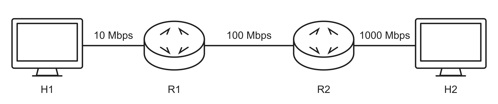

2025-01
算法和算法评价下列程序段的时间复杂度是（ ）。
int count = 0, i, j;
for (i = 1; i * i <= n; i++) {
for (j = 1; j <= i; j++) {
count++;
}
}答案：B
本题讲解：双层循环的时间复杂度——数"内层总共执行了多少次"
答案：B（O(n)）。计数模型只有一句话：这段程序里唯一随 n 增长的动作是 count++，它的执行总次数 = 内层循环体的运行总次数，其余都是常数开销——所以时间复杂度就是"内层总共执行了多少次"的数量级。
第一步：看清外层循环的范围
外层条件是 i * i <= n。为什么 i 最大只到 √n？ 因为它等价于 i <= √n，而 i 每轮只加 1、逐个试探到平方超过 n 为止——这是"给 i 定上限"的判停条件，不是让 i 翻倍跳跃。所以外层不是跑 n 次，而是只跑 k = ⌊√n⌋ 次——这是本题第一个陷阱。
第二步：累加内层执行次数
外层第 i 轮时，内层 j = 1..i 执行 i 次。取 n = 36（k = 6）验证：
| i | 1 | 2 | 3 | 4 | 5 | 6 |
|---|---|---|---|---|---|---|
| 内层执行次数 | 1 | 2 | 3 | 4 | 5 | 6 |
| count 累计 | 1 | 3 | 6 | 10 | 15 | 21 |
总计 = 1 + 2 + … + k = k(k+1)/2 ≈ (√n)²/2 = n/2。系数 1/2 不影响数量级，故时间复杂度为 O(n)。
易错点
- 见两层循环就选 O(n²)（干扰项 D）：内层上限是 i 而不是 n；累加 1+2+…+√n 恰好是"平方项自乘"，量级被压回 n。
- **把
i*i <= n读成i <= n**：那才会得到 O(n²) 级的错误判断——判停条件没读懂，上限直接放大 n1.5 倍。 - 误选 A（O(log n)）：把外层趟数当成对数级（误以为 i 会指数式逼近 n，实际 i 每次 +1），又漏掉内层还要线性累加——只数了趟数、没数总工作量。
- 误选 C（O(n log n)）：套"外层 n × 内层 log n"的模板，两头都没对着本题：外层只跑到 √n，内层跑的是 i 次（从 1 累到 √n），不是 log n 次。
- 纠结低阶项与系数：n/2 + √n/2 里的 √n 是低阶项，大 O 只看最高阶。
结论：外层跑 k = ⌊√n⌋ 次，总次数 k(k+1)/2 = Θ(n)，选 B。
2025-02
栈和队列的应用已知算法 A 用于检查字符串中各类括号是否匹配，A 执行过程中使用初始为空的栈保存 遇到的括号。若栈的容量是 3，则下列选项中，A 不能处理的是（）。
答案：D
本题讲解：括号匹配的栈容量上限——数"同时压在栈里的括号层数"
答案：D。括号匹配算法：左括号入栈，右括号与栈顶配对出栈。栈容量 3 意味着任意时刻栈中括号数不能超过 3——只需从左到右扫描，记录"最大嵌套深度"。
第一步：逐个选项数最大深度（只看括号）
| 选项 | 括号序列 | 深度变化 | 最大深度 | 能否处理 |
|---|---|---|---|---|
| A | ( [ ( ) ] ) | 1,2,3,2,1,0 | 3 | 能 |
| B | [ ( ) ( ) ] | 1,2,1,2,1,0 | 2 | 能 |
| C | [ ( ( ) ( ) ] | 1,2,3,2,3,2,1 | 3 | 能 |
| D | [ ( [ ( ) ] ) ] | 1,2,3,4 | 4 | 不能 |
第二步：看 D 在哪溢出
D = [a-(b+[c*(d+e)-f]+g+h)]：[ 入栈（深 1）→ ( 入栈（深 2）→ [ 入栈（深 3，已满）→ 再遇 ( 需要压入第 4 层，超过容量 3，栈溢出，算法 A 无法继续处理。
易错点
- 数括号总个数：容量限制的是"同时在栈里"的层数，不是括号总数；配对出栈会腾出空间。
- 忽略嵌套是逐层累加的：D 中第 4 个
(入栈时，上面还压着[、(，所以它是第 4 层。 - 在"配对是否成功"上纠缠：四个选项的括号本身都能配对成功，差别只在最大深度。
判据一句话：遇左括号深度 +1、右括号 −1，最大深度超过 3 就不能处理，答案 D。
2025-03
二叉树的概念若二叉树的节点值均为正整数，采用顺序存储方式保存在数组 R 中，用 -1 表示节点不存在，则下列数组中，不能表示一棵二叉树的是（ ）。
答案：D
本题讲解：顺序存储二叉树的合法性——"孩子存在，父亲必须存在"
答案：D。先立模型再判：二叉树的顺序存储是按完全二叉树的层序给编号——编号 i 的左孩子固定是 2i、右孩子固定是 2i+1；反过来，i 为偶数（左孩子）父是 i/2，i 为奇数（右孩子）父是 (i−1)/2，统一写成 ⌊i/2⌋。数组里位置 k 的值 ≠ -1 表示"编号 k 的结点存在"，= -1 表示缺席。于是判据只有一条：下标 i 的结点若存在（值 ≠ -1），其父结点 ⌊i/2⌋ 必须存在——孩子只能"挂"在存在的父亲下面；反过来"父存在而孩子为 -1"完全合法，缺席不违反任何规则。
第一步：逐项检查（数组下标从 1 起）
| 选项 | 数组 R | 检查点 | 结论 |
|---|---|---|---|
| A | 20,15,40,-1,-1,35 | 6 号（35）的父 ⌊6/2⌋=3 号（40）存在 | 合法 |
| B | 15,40,10,18,35,-1,-1 | 4 号（18）、5 号（35）的父都是 2 号（40） | 合法 |
| C | 15,40,10,-1,-1,-1,12 | 7 号（12）的父 ⌊7/2⌋=3 号（10）存在 | 合法 |
| D | 17,20,35,-1,18,45,-1,-1,19,27 | 9 号（19）的父 ⌊9/2⌋=4 号 = -1 | 矛盾 |
第二步：D 为什么矛盾
顺序存储中，9 号结点只能作为 4 号（⌊9/2⌋=4）的左孩子"挂"出来：4 号不存在（-1），却冒出了一个属于它的孩子 9 号。这样的结点在树形结构里无处安放，所以 D 不能表示二叉树。
易错点
- 以为"-1 右边不能再有值"：C 中 6 号是 -1 但 7 号有值，仍合法——顺序存储允许"父在而孩子空"， holes 可以跳过。
- 只检查数组是否连续：合法性与是否中间断开无关，只看父子下标关系 2i / 2i+1 与 ⌊i/2⌋。
- 父结点下标算错：i 为偶数父为 i/2，i 为奇数父为 (i−1)/2，统一记作 ⌊i/2⌋。
口诀：孩子能存在，父亲必先在。9 号的孩子身份无处安放，选 D。
2025-04
二叉树的概念树森林树与二叉树的应用下列关于森林与二叉树的说法中，正确的是（ ）。
答案：B
本题讲解：森林与二叉树的转化规则及性质辨析
答案：B。用"左孩子右兄弟"表示法，任何森林都能唯一转化为一棵二叉树，且该过程可逆。
第一步：排除三个错误说法
- A 错：完全二叉树可以有度为 1 的结点——结点总数 n 为偶数时，恰有一个"只有左孩子"的结点（n=2 的完全二叉树中根的度就是 1）。
- C 错：二叉树恒有 n0 = n2 + 1，但分支结点 = n1 + n2 = n0 + n1 − 1；只要 n1 ≥ 1，分支结点不少于叶结点。反例：根只有左孩子的两个结点，叶 1 个、分支 1 个。
- D 错：表达式树中越靠近根的运算符越后计算，根保存的是最后计算的运算符（叶是操作数）。
第二步：为什么 B 对
森林转二叉树的规则：把各棵树的根视为兄弟从右往左连成右链；每棵树内部"左孩子、右兄弟"。任何森林（含空森林对应空二叉树）都按此规则得到唯一一棵二叉树；反之，去掉根的右链即可还原森林。这是树/森林与二叉树互相转化的标准定理。
易错点
- 把"没有度 1 结点"安到完全二叉树头上：那是满二叉树的特征；完全二叉树 n 为偶数时必有 1 个度 1 结点。
- 表达式树方向记反：最先计算的运算符在叶子附近（深处），最后计算的才在根。
- 以为森林必须先合成一棵树再转：直接按孩子-兄弟规则整体转化即可。
记忆锚点：任何森林 ⇄ 一棵二叉树（左孩子右兄弟），选 B。
2025-05
树与二叉树的应用设字符集 S 中包含 7 个字符，各字符出现的频次分别为 2，3，4，6，8，10，11。现为 S 中字符构造哈夫曼编码，编码长度大于等于 3 的字符个数为（ ）。
答案：D
本题讲解：哈夫曼树的构建与编码长度统计
答案：D（5 个）。先把两条机制立住：其一，哈夫曼编码是从根到叶的路径——每经过一条边就写下一位 0/1，且任何编码都不是另一个的前缀（前缀码），所以一个字符的编码长度恰好等于它在哈夫曼树中的叶子深度；其二，哈夫曼构造每步合并权值最小的两棵子树，越小的权值被"垫"得越早、一层层压下去，于是频次小的字符天然在深处、编码更长。
第一步：模拟合并过程
| 步 | 合并前森林 | 取最小两个 | 合并结果 |
|---|---|---|---|
| 1 | 2,3,4,6,8,10,11 | 2、3 | 新结点 5 |
| 2 | 4,5,6,8,10,11 | 4、5 | 新结点 9 |
| 3 | 6,8,9,10,11 | 6、8 | 新结点 14 |
| 4 | 9,10,11,14 | 9、10 | 新结点 19 |
| 5 | 11,14,19 | 11、14 | 新结点 25 |
| 6 | 19,25 | 19、25 | 根 44 |
第二步：读出各字符的编码长度（叶子深度）
树形：44 → (19, 25)；19 → (9, 10)；25 → (11, 14)；9 → (4, 5)；5 → (2, 3)；14 → (6, 8)。
| 频次 | 2 | 3 | 4 | 6 | 8 | 10 | 11 |
|---|---|---|---|---|---|---|---|
| 编码长度 | 4 | 4 | 3 | 3 | 3 | 2 | 2 |
长度 ≥ 3 的是频次 2、3、4、6、8 对应的字符，共 5 个。
易错点
- 合并顺序错：每一步都必须取"当前森林"中最小的两个，新结点要参与后续比较，不能按原始顺序配对。
- 不建树就估长度：哈夫曼树只保证"频次小在深处"的趋势，具体长度必须建完树读深度。
- 数错对象：长度为 2 的只有 10、11 两个字符，故长度 ≥ 3 的是 7 − 2 = 5 个，选 D。
- 误选 A（2 个）：把"大于等于 3"读成"等于 2"，恰好数到深度为 2 的 10、11 两个字符。
- 误选 B（3 个）：只数了深度恰好为 3 的字符（4、6、8 三个），漏掉更深处深度为 4 的频次 2、3。
- 误选 C（4 个）：建树时合并顺序出错（某步没取当前最小的两个），读出的深度分布整体错一档。
口诀：小权值在深处。长度 ≥ 3 的字符共 5 个。
2025-06
图的基本概念图的应用下列关于图，选项正确的是（）。
答案：C
本题讲解：图的基本性质辨析——度数、拓扑序列与 BFS 的适用边界
答案：C。"各顶点的度均 ≥ 2 的无向图必有回路"可以严格证明，其余三项都能举出反例。
第一步：证明 C
设无向图有 n 个顶点、e 条边。各顶点度均 ≥ 2，则度数之和 Σdeg ≥ 2n；又 Σdeg = 2e，故 e ≥ n。若图无回路，则每个连通分量都是树或孤立点，其边数严格小于顶点数，全图 e < n，矛盾。所以必有回路。
第二步：逐项找反例
- A 错：n 个顶点连成有向环 1→2→…→n→1，每个顶点入度恰为 1，不存在入度 0 的顶点。
- B 错：拓扑序列一定存在（无环保证），但不唯一——两个顶点之间没有路径约束时，谁先谁后都行，如 1→2、3→4 时
1,2,3,4与3,4,1,2都是拓扑序列。 - D 错：BFS 只适用于无权图（或所有边等权）的单源最短路径；带权图边权不同时，"跳数最少"≠"路径最短"，求"每一对"顶点更要用 Floyd/Dijkstra。
易错点
- 把"存在"和"唯一"捆在一起：DAG 保证拓扑序列存在，不保证唯一。
- 给 BFS 硬加上权值累计：BFS 按层扩展先到先得，边权不等时先到的未必最短。
- 觉得有向图"总得有个起点"：那只在 DAG 里成立，带环的有向图可以处处有入边。
记忆锚点：无向图各点度 ≥ 2 ⇒ e ≥ n ⇒ 必有回路，选 C。
2025-07
顺序查找和折半查找算法和算法评价已知查找表中有 400 个元素，查找每个元素的概率相同。采用分块查找法，且均匀分块。若采用顺序查找法确定元素所在的块，且块内也采用顺序查找法，为使查找效率最高，则每块包含的元素个数应为（）。
答案：C
本题讲解：分块查找的最优块长——均值不等式定 s
答案：C（每块 20 个）。400 个元素均匀分成 b 块、每块 s 个（b·s = 400）；块间、块内都用顺序查找时，最优块长 s = √n。
第一步：写出 ASL 表达式
块间顺序查找平均查 (b+1)/2 块，块内顺序查找平均查 (s+1)/2 个：
ASL = (b+1)/2 + (s+1)/2 = (b+s)/2 + 1 = (400/s + s)/2 + 1
要 ASL 最小，只需 s + 400/s 最小。
第二步：求最值并逐项验证
由均值不等式 s + 400/s ≥ 2·√400 = 40，当 s = √400 = 20 时取等号，此时 b = 20，ASL = 21 最小。
| 每块 s | 块数 b | 块间 (b+1)/2 | 块内 (s+1)/2 | 总 ASL |
|---|---|---|---|---|
| 8 | 50 | 25.5 | 4.5 | 30 |
| 10 | 40 | 20.5 | 5.5 | 26 |
| 20 | 20 | 10.5 | 10.5 | 21（最小） |
| 25 | 16 | 8.5 | 13 | 21.5 |
易错点
- 只优化块内查找：两项地位对称，最优解在 b = s = √n 处，偏袒任何一边都会算成 8 或 25。
- 套用"块间折半查找"的公式：那是 ASL = ⌈log2(b+1)⌉ + (s+1)/2，最优块长另算；本题明确块间用顺序查找。
- 丢掉约束 b·s = 400：b 和 s 不能独立取最小，必须互相牵制。
结论：s = √400 = 20 时 ASL = 21 最小，选 C。
2025-08
B树和B+树7 个不同的关键字，能够构成的不同 4 阶 B 树的个数是（）。
答案：C
本题讲解：4 阶 B 树的形态计数——按"根关键字数 + 树高"分类枚举
答案：C（9 种）。4 阶 B 树规则：每结点至多 3 个关键字；非根结点至少 1 个（⌈4/2⌉−1）；根若非叶子至少 2 棵子树；所有叶子同层。计数思路：7 个关键字太少，B 树形态完全由"每个结点装几个关键字"决定，所以按根放几个关键字、树撑到几层两条轴分类，就能不重不漏地穷举。
第一步：树高为 2 的情形（根 + 一层叶子）
根有 k 个关键字 → 有 k+1 个叶子，叶子共装 7−k 个关键字，每个叶子装 1~3 个：
| 根关键字 k | 叶子数 | 叶子关键字分布（有序） | 种数 |
|---|---|---|---|
| 1 | 2 | (3,3) | 1 |
| 2 | 3 | (1,1,3),(1,2,2),(1,3,1),(2,1,2),(2,2,1),(3,1,1) | 6 |
| 3 | 4 | (1,1,1,1) | 1 |
小计 8 种。
第二步：树高为 3 的情形
三层树最少要：根 1 个 + 2 个内部结点各 1 个 + 4 个叶子各 1 个 = 7 个关键字，恰好用满 7 个，只有 1 种；根再多放关键字就会超出 7 个，不可能。
第三步：合计
1 + 6 + 1 + 1 = 9 种。
易错点
- 把叶子分布当无序：(1,1,3) 与 (3,1,1) 中各叶子装的关键字个数不同，根两侧区间不同，是不同的 B 树。
- 树高枚举漏掉 3 层（干扰项 B 的 8 = 树高 2 的小计）：7 个关键字恰好撑得起一棵三层 B 树（全部取下限 1 个关键字），容易漏数最后 1 种。
- 把有序分布当重复数（干扰项 A 的 7）：在树高 2 里把 (1,3,1) 之类误当成 (1,1,3) 的重复而删掉，6 种只剩 5 种。
- 把树高 3 多算成 2 种（干扰项 D 的 10）：以为根放 1 个或 2 个关键字都能撑起三层——但内部结点和叶子全取下限 1 才恰好凑满 7 个，根再多放 1 个关键字总数就超了，树高 3 只能 1 种。
- 违反关键字下限：非根结点至少 1 个关键字，根至少 2 棵子树，靠这些约束才能圈定所有形态。
结论：树高 2 共 8 种 + 树高 3 共 1 种 = 9 种，选 C。
2025-09
散列（Hash）表下列关于散列法处理冲突的叙述中，正确的是（）。
答案：A
本题讲解：散列法冲突处理的性质辨析——探查序列能否覆盖全表
答案：A。线性探查依次试探 m 个地址，只要表不满就一定能找到空位；其余三项各有漏洞。
第一步：逐项分析
- A 对：线性探查 di = 0, 1, 2, …, m−1，探查序列覆盖全部 m 个地址；表不满 ⇒ 必有空位 ⇒ 沿序列找下去一定能找到。
- B 错：二次探查 di = 1², −1², 2², −2², … 是"跳跃式"的，可能重复、覆盖不全。例如 m = 5 时探查地址为 H+1, H−1, H+4(≡H−1), H−4(≡H+1)，只能到达 2 个不同位置——明明有空位也可能探查不到。
- C 错：线性探查有堆积（聚集）现象：散列地址不同的非同义词，也会因落入连续被占的区段而卷进冲突。冲突不一定发生在同义词之间。
- D 错：二次探查处理的冲突同样可能是同义词之间（同义词当然会相撞），"一定是非同义词"把话说反了、也太绝对。
易错点
- 以为二次探查"跳着找"也能走遍全表：一般情况下探查序列覆盖不了 m 个位置，不保证成功。
- 把"冲突"等同于"同义词冲突"：堆积现象正是非同义词卷入冲突的证据，这是线性探查的最大缺点。
- 忽略"表不满"这个前提：A 的结论依赖表不满；表满时线性探查会原地兜圈。
记忆锚点：线性探查走得全、必有堆积；二次探查走得跳、覆盖不全，选 A。
2025-10
各种内部排序算法的比较及应用下列排序算法中，最坏情况下元素移动最少的是（）。
答案：D
本题讲解：最坏情况下元素移动最少的排序算法
答案：D（简单选择排序）。两个口径要卡死：数的是移动不是比较；看的是最坏情况。
第一步：逐个算法数最坏移动次数
| 算法 | 最坏情况 | 元素移动次数 |
|---|---|---|
| 起泡排序 | 初始逆序，每对都要交换 | 3 × n(n−1)/2，O(n²) 级 |
| 直接插入排序 | 初始逆序，每个元素一路移到最前 | 约 n²/2，O(n²) 级 |
| 快速排序 | 基本有序 + 端点为枢轴，划分失衡 | O(n²) 级交换 |
| 简单选择排序 | 与初始序列无关 | 每趟至多 1 次交换，≤ 3(n−1)，O(n) 级 |
第二步：为什么选择排序移动最少
简单选择排序第 i 趟只在"当前最小值不在位置 i"时才做一次交换（3 次赋值），全程最多 n−1 次交换，移动次数是 O(n) 级；其余三个算法最坏都是 O(n²) 级移动。它的风格是"多比较、少移动"：比较次数恒为 n(n−1)/2，但移动最少且与初始状态无关。
易错点
- 拿交换次数冒充移动次数：一次交换 = 3 次移动（借助暂存变量），口径必须统一。
- 被"比较最少"带偏：本题问移动；选择排序恰恰是比较最多、移动最少的典型。
- 忽略"最坏情况"限定：插入排序在基本有序时移动很少，但题目问的是最坏上界。
记忆锚点：选择排序：比较 O(n²)、移动 O(n)，选 D。
2025-11
各种内部排序算法的比较及应用对含 9 个关键字的初始序列进行排序，若序列的变化情况如下表所示，则采用的排序算法是（ ）。
| 排序阶段 | 序列 |
|---|---|
| 初始序列 | 5，25，40，30，10，20，45，15，35 |
| 第 1 趟排序后 | 5，10，20，30，15，35，45，25，40 |
| 第 2 趟排序后 | 5，10，15，25，20，30，40，35，45 |
答案：A
本题讲解：由两趟排序结果反推算法——分组插入（希尔排序）
答案：A（希尔排序）。突破口：两趟之后序列都没有整体有序，但每趟都让整条序列"大变样"——这是分组插入的指纹。
第一步：先排除三个算法
| 假设算法 | 第 1 趟应得结果 | 对照题面 |
|---|---|---|
| 折半插入 | 只把第 2 个元素插入前面有序区，序列几乎不变 | 不符，排除 D |
| 基数排序 | 按个位收集：40,30,10,20,5,25,45,15,35 | 不符，排除 B |
| 归并排序 | 两两归并：5,25,30,40,10,20,15,45,35 | 不符，排除 C |
第二步：用希尔排序复现两趟
- 第 1 趟 gap = 3：三组 {5,30,45}、{25,10,15}、{40,20,35} 各自组内直接插入，放回得 5,10,20,30,15,35,45,25,40——与题面第 1 趟完全一致。
- 第 2 趟 gap = 2：两组 {5,20,15,45,40}、{10,30,35,25} 组内插入，放回得 5,10,15,25,20,30,40,35,45——与题面第 2 趟完全一致。
gap 序列 3 → 2（再往下是 1，整体有序），正是希尔排序。
易错点
- 以为第 2 趟后就该有序：希尔排序只有最后一趟（gap = 1）才保证整体有序，中间趟只做组内有序。
- 混淆归并的中间结果：归并第 1 趟只会产生长度为 2 的有序段，不会出现题面这种"全局大挪位"。
- gap 方向搞反：gap 从大到小逐趟缩小，而不是从小到大。
记忆锚点：中间趟"部分有序 + 大变样" ⇒ 希尔排序，选 A。
2025-12
数制与编码在 32 位计算机上执行下列 C 语言代码，则 ui 的真值为（ ）。
short si = -32767;
unsigned int ui = si;答案：D
本题讲解：short 转 unsigned int 的符号扩展与无符号解释
第 0 步：先立模型——补码与无符号数是同一位串的两种解释
32 位一共只有 232 个位串。补码和无符号数是同一批位串的两种读法：位串按补码读出真值 t（−231 ~ 231−1），按无符号读出 u（0 ~ 232−1），两者恒满足 u ≡ t (mod 232)——真值为负时就是 u = t + 232。这正是本题的全部机关：si 按补码是 −32767，赋给 unsigned 后同一串位按无符号读，值就是 −32767 + 232。
为什么符号扩展补 1 而数值不变？ 8001H 之所以代表 −32767，依据是 −32767 ≡ 32769 (mod 216)；高位再补一串 1 得 FFFF 8001H，依据变成 −32767 ≡ 4294934529 (mod 232)——同一个负数在更大模下的化身，同余关系被高位全 1 维持着。若补 0，同余关系破坏，就换成另一个数了。
第一步：先写出 si 的 16 位补码
si = -32767。先写 32767 的 16 位表示：0111 1111 1111 1111B = 7FFFH；取负数按「按位取反、末位加 1」得 1000 0000 0000 0001B，即 [si]补 = 8001H。
第二步：赋给 32 位 unsigned int 时发生了什么
C 语言转换规则：short（16 位有符号）赋给 unsigned int（32 位）时，先把 16 位补码符号扩展到 32 位——符号位是 1，高 16 位全部补 1，得机器数 FFFF 8001H；然后这个 32 位机器数按无符号数解释。
| 阶段 | 机器数 | 解释 |
|---|---|---|
| si 的 16 位补码 | 8001H | 真值 -32767 |
| 符号扩展成 32 位 | FFFF 8001H | 按补码解释仍是 -32767 |
| 按 unsigned 解释 | FFFF 8001H | 232 - 32767 |
第三步：按无符号数算真值
FFFF 8001H 的最高位是 1，但 ui 是无符号类型，按第 0 步的模型直接加模：u = −32767 + 232 = 232 − 32767。而 32767 = 215 − 1，所以 ui = 232 − 215 + 1，选 D。
易错点
- 做成零扩展：把 8001H 前面直接补 0 得 0000 8001H，无符号解释正好是 215 + 1——这就是干扰项 A。有符号数加宽位数必须符号扩展。
- 误选 B（215）：把 8001H 的无符号值记成 215——记错邻居：无符号值 215 = 8000H 才是 −32768 的位串；8001H 的无符号值是 215 + 1 = 32769。
- 按补码读回：得到 -32767，忽略了 ui 是无符号类型，最高位 1 不再当符号。
- 加减差 1：8001H 对应的绝对值是 32767 = 215 − 1，所以减 32767 等价于 −215 + 1；误算成 232 − 215 − 1 就是干扰项 C。
一句话结论：先符号扩展得 FFFF 8001H，再按无符号解释为 232 − 215 + 1，选 D。
2025-13
浮点数的表示与运算已知 float 型变量用 IEEE754 单精度浮点数格式表示。 若 float 型变量 x 的机器数为 4730 0000H；则 x 的值为（）。
答案：D
本题讲解：IEEE 754 单精度机器数的还原
第一步：把 4730 0000H 展开成 32 位三段
4730 0000H = 0100 0111 0011 0000 0000 0000 0000 0000B。单精度格式按 1 + 8 + 23 拆：
| 字段 | 数符 S | 阶码 E（8 位） | 尾数 M（23 位） |
|---|---|---|---|
| 取值 | 0 | 1000 1110 | 011 0000 0000 0000 0000 0000 |
第二步：算指数与有效数字
- 阶码 E = 1000 1110B = 128 + 8 + 4 + 2 = 142。为什么减 127？ 8 位阶码按无符号形式存放（便于硬件逐位比较大小），要容纳负指数就得把真实指数整体抬高 127 存进去——所以真指数 = E − 127 = 15。
- 尾数域 M = 011B，其余 20 位全 0，即 0.011B = 0.25 + 0.125 = 0.375。为什么有效数字是 1.M 而不是 0.M？ 规格化把小数点挪到第一个 1 之后，尾数整数位恒为 1；这个 1 对所有规格化数都相同，干脆不存、省出一位精度——所以有效数字 = 1.011B = 1 + 0.375 = 1.375，最终 x = 1.375 × 215。
第三步：合成真值
x = 1.375 × 215（数符 0 为正），选 D。
易错点
- 漏掉隐含的 1：把值写成 0.375 × 215（干扰项 A、C 的来源）——规格化非零数尾数域前隐含一个 1。
- 误选 B（1.375 × 214）：尾数对了、指数差 1——典型原因是 32 位连写时字段拆分错位（阶码读成 1000 1101），说明拆字段必须从最高位一位一位数，不能按字节想当然。
- 指数忘了减偏置 127：直接拿 142 当指数。
- 按字节拆字段：符号 1 位、阶码 8 位必须从最高位连续数下来，0x4730 这两个字节同时横跨符号位、阶码和尾数域。
一句话结论：S = 0，E = 142 − 127 = 15，M = 0.011B，x = 1.375 × 215，选 D。
2025-14
数制与编码运算方法和运算电路假设 8 位字长的计算机中，两个带符号整数 x 和 y 的补码表示分别为[x]补=A3H，[y]补 =75H，则通过补码加减运算器得到的 x-y 的值及 OF 标志分别为（）。
答案：D
本题讲解：8 位补码减法与溢出标志 OF
第一步：读出两个数的真值
[x]补 = A3H = 1010 0011B，符号位 1，真值 x = −128 + 32 + 2 + 1 = −93；[y]补 = 75H = 0111 0101B，符号位 0，真值 y = 64 + 32 + 16 + 4 + 1 = 117。
第二步：减法统一为加法
补码运算器做 x − y = x + [−y]补。y = 0111 0101B，按位取反加 1 得 [−y]补 = 1000 1011B = 8BH。
第三步：8 位竖式相加（从 bit0 到 bit7）
| 位 | bit7 | bit6 | bit5 | bit4 | bit3 | bit2 | bit1 | bit0 |
|---|---|---|---|---|---|---|---|---|
| [x]补 | 1 | 0 | 1 | 0 | 0 | 0 | 1 | 1 |
| [−y]补 | 1 | 0 | 0 | 0 | 1 | 0 | 1 | 1 |
| 本位和 | 0 | 0 | 1 | 0 | 1 | 1 | 1 | 0 |
逐位：bit0 1+1=进1得0；bit1 1+1+1=进1得1；bit2 0+0+1=1；bit3 0+1=1；bit4 0；bit5 1+0=1；bit6 0；bit7 1+1=进1得0。8 位结果 = 0010 1110B = 2EH = 46，最高位进位被丢弃。为什么第 9 位进位可以扔？ 8 位运算器是模 28 = 256 的记数系统，第 9 位根本不在寄存器里；丢掉它等于减 256，而 −210 ≡ 46 (mod 256)，2EH 正是 −210 在 8 位世界里的化身。
第四步：判 OF
- 双高位法：最高位进位 C7 = 1，次高位进位 C6 = 0，OF = C7 与 C6 异或 = 1；
- 符号判断：负数 + 负数 = 正数（0010 1110B 符号位 0），必然溢出；
- 真值核对：x − y = −93 − 117 = −210，超出 8 位补码范围 −128～127，确实溢出；机器数 2EH 按 8 位补码读回是 +46（即 −210 + 256）。
所以 x − y 的机器结果为 46、OF = 1，选 D。
易错点
- 误选 A（24，0）：把减法做成了加法——A3H + 75H = 118H，取低 8 位得 18H = 24；异号相加不可能溢出，OF 正确地为 0。一步「减变加」错，数值和标志就全错。
- 误选 B（24，1）：数值同样来自误加，OF 又把「最高位有进位」错当成溢出——CF 是无符号进位标志，有符号溢出看的是 C7 与 C6 是否相异。
- OF 判成 0（干扰项 C：46 对但标志错）：只看到「最高位有进位 CF=1」就完事；OF 是有符号溢出标志，负加负得正、C7 与 C6 相异才是溢出。
- [−y]补 求错：是对 y 的机器数取反加 1，不是对真值 117 直接写 −117 的十进制。
一句话结论：x + [−y]补 = A3H + 8BH = 2EH（46），C7=1、C6=0，OF=1，选 D。
2025-15
主存储器程序的机器级代码表示某 32 位计算机按字节编址，采用小端方式存放数据，编译器按边界对齐方式为下列 C 语言结构体数组变量 employee 分配存储空间。
struct record {
int id;
char name[10];
int salary;
} employee[200];数组 employee 的起始地址为 0000 A0B0H，employee[1].id 的机器数为 1234 5678H，则 56H 的地址是（ ）。
答案：C
本题讲解：结构体对齐、数组寻址与小端存放
第 0 步：为什么有"边界对齐"和"小端"这两条规矩
边界对齐：32 位 CPU 访存一次取 4 字节，int 型成员的地址若不是 4 的倍数，取一个值就要拆成两次访存再拼接。编译器宁愿在成员之间塞填充字节，也要让每个 int 从 4 的倍数地址开始——这就是 name[10]（占 10 字节）之后要空 2 字节的原因；同理，整个结构体的大小也凑成最大对齐值（4）的倍数，保证数组里每个元素的 id 都对齐。
小端存放：按字节编址时，多字节机器数要拆成单字节摆放，小端的规则是最低有效字节（LSB）放最低地址——记忆口诀"低对低"。把 1234 5678H 从低地址往高地址排就是 78、56、34、12（大端正好相反，MSB 在低地址）。
第一步：算结构体成员偏移与大小
32 位机、边界对齐：int 型成员地址须是 4 的倍数，char 型任意。
| 成员 | 类型 | 偏移 |
|---|---|---|
| id | int | 0～3 |
| name[10] | char | 4～13 |
| （填充） | — | 14～15 |
| salary | int | 16～19 |
salary 必须从 4 的倍数开始，name 之后空 2 字节填充；结构体总大小须是最大对齐值（4）的倍数，所以 sizeof(struct record) = 20 字节。
第二步：定位 employee[1].id
数组起始地址 0000 A0B0H，每个元素占 20B（14H）：employee[1] 是第二个元素，起始地址 = A0B0H + 14H = 0000 A0C4H。id 在结构体内偏移 0，所以 id 占 A0C4H～A0C7H 四个字节。
第三步：按小端方式找 56H
机器数 1234 5678H 按小端存放——最低位字节放最低地址：
| 地址 | A0C4H | A0C5H | A0C6H | A0C7H |
|---|---|---|---|---|
| 内容 | 78H | 56H | 34H | 12H |
56H 在 0000 A0C5H，选 C。
易错点
- 漏掉 salary 前的填充：把结构体算成 18 字节，employee[1] 起点算成 A0C2H，56H 落在 A0C3H——干扰项 A 的来源。
- 误选 B（A0C4H）：拿 id 的起始地址直接当答案——56H 是机器数 1234 5678H 里第二高的字节，不是首字节；小端下首字节是 78H，56H 在首地址 +1，必须逐字节排。
- 大小端弄反：以为 12H 在 A0C4H——小端是「低字节在低地址」；若按大端排，56H 会落在 A0C6H，正是干扰项 D。
- 元素下标差 1：employee[1] 要跳过一整个元素（20B），不是从 employee[0].name 后面接着数。
一句话结论：元素 20B，employee[1] 起于 A0C4H，小端下 78H→A0C4H、56H→A0C5H，选 C。
2025-16
指令系统下列选项中，由指令集体系结构（ISA）规定的是（ ）。
答案：B
本题讲解：ISA 规定了什么、不规定什么
第一步：抓住 ISA 的定位
指令集体系结构（ISA）是硬件与软件的交界面：它规定指令格式（指令字长、操作码编码）、寻址方式、通用寄存器组织、可执行的运算、异常与 I/O 的约定等「写进手册」的内容；而这些指令用什么电路实现，属于微架构（实现）层，ISA 不做规定。
第二步：逐项判断
| 选项 | 内容 | 属于哪一层 | 判断 |
|---|---|---|---|
| A | 是否采用阵列乘法器 | 运算器内部电路实现 | 实现层，不规定 |
| B | 是否采用定长指令字格式 | 指令字长与编码格式 | ISA 规定 |
| C | 是否采用微程序控制器 | 控制器实现方式 | 实现层，不规定 |
| D | 是否采用单总线数据通路 | 数据通路结构 | 实现层，不规定 |
同一 ISA 下可以有不同微架构实现：乘法器可用阵列乘法器也可用其他电路，控制器可用微程序也可用硬连线，数据通路可用单总线也可用多总线——这些选择变了，指令集兼容性不变。而指令字长是否定长直接写进 ISA 的指令格式定义（如许多 RISC 处理器定长 32 位指令），所以选 B。
易错点
- 把指令字长当实现细节：定长/变长影响取指、译码约定，是 ISA 的内容。
- 被「乘法」迷惑：ISA 只规定「提供乘法指令」，不规定乘法器用哪种电路实现。
- 把控制器方式当 ISA：微程序/硬连线是控制器的设计方式，对软件不可见。
一句话结论：ISA 管指令格式、寻址、寄存器等软硬件约定；阵列乘法器、微程序控制器、单总线通路都是实现细节，选 B。
2025-17
CISC和RISC的基本概念下列关于 RISC 的叙述中，错误的是（）。
答案：C
本题讲解：RISC 的特征辨析（找错误项）
第一步：回顾 RISC 的典型特征
- 指令条数少、定长指令字、格式规整、寻址方式少；
- 只有 Load/Store 指令访存，其余指令都在寄存器之间操作（Load/Store 型设计风格）；
- 大量通用寄存器，过程调用时多用寄存器传递参数；
- 指令功能简单、执行时间接近，易于采用流水线；控制器多用硬连线实现。
第二步：逐项核对
| 选项 | 内容 | 判断 |
|---|---|---|
| A | 多采用硬连线方式实现控制器 | 正确——指令规整，控制逻辑简单，硬连线速度快 |
| B | 通常采用 Load/Store 型指令设计风格 | 正确 |
| C | 难以采用流水线数据通路实现微架构 | 错误——RISC 恰恰最利于流水线 |
| D | 多采用寄存器传递过程调用时的参数 | 正确——调用约定，减少访存 |
题目问「错误的」叙述，选 C。事实正好相反：RISC 指令长度相同、多数指令单周期完成、访存指令少，数据通路便于划分成规整的流水段，容易实现流水线；难做流水线的倒是 CISC——指令长短不一、执行时间差异大。
易错点
- 把「难以流水线」当 RISC 特点：把 CISC 的困难安到了 RISC 头上，方向正好颠倒。
- 以为硬连线属于 CISC：CISC 指令复杂，常用微程序控制；硬连线配合规整的 RISC 指令才高效。
一句话结论：RISC = 规整 + 简单 + Load/Store + 寄存器传参 + 易流水线；说它「难以流水线」正好说反，选 C。
2025-18
计算机的性能指标下列关于 CPI 和 CPU 时钟周期的叙述中，错误的是（）。
答案：B
本题讲解：CPI 与时钟周期的决定因素（找错误项）
第一步：回顾两个基本量
- 时钟周期 = 主频的倒数，是 CPU 的最小时间节拍；
- CPI = 执行程序所需总时钟周期数 ÷ 总指令数，即平均每条指令花多少拍；
- CPU 时间 = 指令数 × CPI × 时钟周期。
第二步：逐项核对
| 选项 | 判断 | 理由 |
|---|---|---|
| A 不同类型指令的 CPI 可能不一样 | 正确 | 浮点乘除比定点加减花更多周期 |
| B 程序的 CPI 与 Cache 缺失率无关 | 错误 | 每次缺失要插入等待周期，缺失率越高实际 CPI 越大 |
| C 单周期 CPU 的时钟周期以最耗时指令为准 | 正确 | 所有指令一拍完成，节拍必须迁就最慢的指令 |
| D 流水线 CPU 的时钟周期以最长流水段为准 | 正确 | 每拍推进一段，节拍由最慢段决定 |
程序的 CPI 不是只由指令本身决定：访存指令遇到 Cache 缺失时，必须停下等主存（缺失损失可达上百拍），这些 stall 周期全部计入 CPI。所以 CPI 与 Cache 缺失率直接相关，B 的说法错误，选 B。
易错点
- 以为 CPI 只看指令功能：存储层次性能同样进入 CPI（等待周期）。
- C、D 基准混淆：单周期看「最慢的指令」，流水线看「最慢的流水段」——对象不同，但都取「最长耗时」。
一句话结论：Cache 缺失率越高 CPI 越大，「无关」说法错误，选 B。
2025-19
CPU的功能和基本结构数据通路的功能和基本结构控制器的功能和工作原理指令流水线下列关于 CPU 中的数据通路和控制器的叙述中，错误的是（）。
答案：A
本题讲解：数据通路与控制器的组织（找错误项）
第一步：定位各部件归属
- 通用寄存器组：按编号供指令随机读写的运算数据寄存器；
- 程序计数器 PC：专用寄存器，存放下条指令地址，自带取指自增与转移改写通路，不属于通用寄存器组；
- 控制器：对操作码译码并产生控制信号序列；
- 流水线：必须处理数据相关、控制相关等冒险。
第二步：逐项核对
| 选项 | 判断 | 理由 |
|---|---|---|
| A 通用寄存器组中应该包含程序计数器 | 错误 | PC 是专用寄存器，独立于通用寄存器组 |
| B 控制器中一定包含指令操作码的译码电路 | 正确 | 不译码就不知道该产生什么控制信号 |
| C 单周期 CPU 中的控制器比多周期 CPU 中的更简单 | 正确 | 单周期一拍到底无状态划分；多周期要维护「当前第几拍」的状态机 |
| D 流水线 CPU 需解决数据相关和控制相关等冒险问题 | 正确 | 相关冒险是流水线的基本问题（转发、气泡等） |
题目问「错误的」叙述，选 A。PC 的功能、自增方式、改写时机都由控制器专门管理，它是 CPU 内的专用部件；即便某些 ISA 允许指令读取 PC 值（如相对跳转），也不等于 PC 被放进通用寄存器组。
易错点
- PC 与通用寄存器混为一谈：通用寄存器组由指令的寄存器编号字段访问，PC 不在其中。
- C 方向记反：多周期把指令拆成多拍，控制器要维护状态序列，比单周期复杂。
一句话结论：PC 是专用寄存器，不在通用寄存器组内，选 A。
2025-20
计算机的性能指标总线概述总线事务和定时某处理器总线采用同步、并行传输方式，每个总线时钟周期传送 4 次数据（quad-pumped 技术）。若该总线的工作频率为 1333 MHz（实际单位是 MT/s，表示每秒传送 1333 M 次），总线宽度为 64 位，则总线带宽约为（ ）。
答案：A
本题讲解：总线带宽的计算与 MT/s 单位陷阱
第一步：读懂频率单位 MT/s
题干明确：「工作频率 1333 MHz（实际单位是 MT/s，表示每秒传送 1333 M 次）」。也就是说 1333 MT/s 已经是每秒数据传送的次数，quad-pumped（每个总线时钟周期传 4 次）这个信息已经体现在次数里，不能再乘 4。
第二步：带宽 = 每秒传送次数 × 每次传送字节数
总线宽度 64 位 = 8 B：
| 计算步骤 | 结果 |
|---|---|
| 每秒传送次数 | 1333 M 次 |
| 每次传送 | 64 位 = 8 B |
| 带宽 | 1333M × 8B = 10664 MB/s |
| 单位换算（1000 进制） | 10664 MB/s ≈ 10.66 GB/s |
选 A。
第三步：核对干扰项的来源
| 选项 | 数值 | 错误来源 |
|---|---|---|
| A | 10.66 GB/s | 1333M × 8B，正确 |
| B | 42.66 GB/s | 把 MT/s 当总线时钟频率又乘了一次 4 |
| C | 85.31 GB/s | 再多乘一个 8 的系数 |
| D | 341.25 GB/s | 连乘多个系数的极端错法 |
易错点
- 重复乘 4：MT/s 是「每秒传送次数」，每周期 4 次已计入；再乘 4 就是干扰项 B。
- 单位换算：GB/s 与 MB/s 按 1000 进制换算，1333 × 8 = 10664 MB/s = 10.664 GB/s。
一句话结论：带宽 = 1333 MT/s × 8 B = 10664 MB/s ≈ 10.66 GB/s，选 A。
2025-21
I/O方式适合采用 DMA 的设备有（ ）。
I. 键盘
II. 网卡
III. 固态硬盘
IV. 针式打印机
答案：B
本题讲解：哪些设备适合 DMA 方式
第一步：DMA 的适用标准
DMA 适合传送速率高、以数据块为单位、一次传送量大的设备：CPU 只做初始化和结束处理，成块数据由 DMA 控制器直接在设备与主存之间搬运。低速、按字节零星传送的设备用程序查询或中断方式更经济——DMA 控制器有硬件成本，低速设备用它是浪费。
第二步：逐项判断
| 设备 | 特点 | 适合 DMA？ |
|---|---|---|
| I 键盘 | 人速级，每次几个字节 | 否——中断方式足够 |
| II 网卡 | 高速、成帧成块传送 | 是 |
| III 固态硬盘 | 高速块设备，批量读写 | 是 |
| IV 针式打印机 | 低速，按字符输出 | 否 |
网卡和固态硬盘都是高速成块传送的设备，DMA 可以让 CPU 在整块数据传送期间照常执行程序，只在整块传完后被中断一次；键盘、针式打印机速度极低、数据零星，采用中断（或程序查询）方式即可，答案为 II、III，选 B。
易错点
- 以为外设都该用 DMA：DMA 的优势在「成块 + 高速」，对低速设备得不偿失。
- 把打印机当高速设备：针式打印机是典型的低速字符设备。
- 把键盘当块设备：键盘数据以字节为单位、间隔由人决定，谈不上块传送。
一句话结论：网卡、固态硬盘高速成块，适合 DMA；键盘、针式打印机低速零星，不适合，选 B。
2025-22
异常和中断机制下列选项中，会触发外部中断请求的事件是（）。
答案：A
本题讲解：外部中断与内部异常的区分
第一步：明确「外部中断请求」的来源
外部中断请求来自 CPU 之外的部件或设备，经中断请求线（INTR、NMI）送入 CPU，与当前执行的程序无关，是异步事件；而由正在执行的指令本身引发的（除 0、溢出、缺页、陷入/断点指令等）属于内部异常。
第二步：逐项判断
| 选项 | 事件来源 | 判断 |
|---|---|---|
| A DMA 传送结束 | DMA 控制器在 CPU 外部，整块数据传完后向 CPU 发中断请求，请 CPU 做后处理 | 外部中断请求 |
| B 总线事务结束 | 总线操作的常规时序事件，总线自己握手完成即可，不发中断请求 | 否 |
| C 页故障的处理结束 | 页故障本身是内部异常；「处理结束」只是异常处理完返回断点 | 否 |
| D 执行断点指令 | 程序主动执行的陷入指令，由指令执行引发 | 内部异常 |
DMA 传送结束中断是「外部部件请求 CPU 服务」的教科书例子：DMA 控制器独立于 CPU 完成整块传送，之后主动向 CPU 发中断请求。所以选 A。
易错点
- 把 DMA 结束当异常：DMA 结束中断由 CPU 外部的 DMA 控制器发出，是典型的外部中断。
- 把断点指令当外部事件：断点、自陷指令由程序自己执行触发，属于内部异常（陷入）。
- 被「页故障」绕晕：页故障是内部异常，它的「处理结束」更不是新的中断请求。
一句话结论：只有 A 是 CPU 外部部件（DMA 控制器）送来的中断请求，选 A。
2025-23
操作系统的运行环境进程与线程简介虚拟内存管理在采用页式虚拟存储管理方式的系统中，当发生上下文切换时，下列寄存器中操作系统不需要更新的是（ ）。
答案：D
本题讲解：上下文切换时不需要更新的寄存器
第一步：先想清楚"上下文切换"切换的是什么
答案：D。上下文切换保存/恢复的是进程私有的运行现场。判断标准只有一条：该寄存器的内容是否与"当前是哪个进程"有关。与进程有关 → 切换时必须更新；全系统唯一、与进程无关 → 不用动。题目强调页式虚拟存储，就是在暗示"每个进程有独立页表"，这是 B 项的考点。
第二步：逐项判断
| 选项 | 寄存器 | 是否更新 | 理由 |
|---|---|---|---|
| A | 通用寄存器 | 要 | 进程私有的工作现场，切出时保存、切入时恢复 |
| B | 页表基址寄存器 | 要 | 页式虚拟存储中每个进程有自己的页表，切换后必须指向新进程的页表 |
| C | 程序寄存器（PC） | 要 | 记录进程执行到哪条指令，各进程断点位置不同 |
| D | 内核中断向量表基址寄存器 | 不要 | 中断向量表由 OS 启动时建立，全系统唯一、所有进程共用 |
易错点
- 误选 B：以为页表是"系统级"的。恰恰相反，页式虚拟存储为每个进程提供独立地址空间，页表基址寄存器必须随进程更换。
- 误选 A 或 C：进程现场正是切换时最典型的保存内容，通用寄存器与 PC 绝不能漏。
- 看漏"内核"二字：中断向量表属于内核全局配置，切换到哪个进程它都不变。
一句话结论：切换只搬"进程私有"的现场；全系统共享的内核配置（中断向量表基址）不需要更新，选 D。
2025-24
操作系统结构关于虚拟化技术，错误的说法是（）。
答案：C
本题讲解：虚拟化技术的说法辨析
第一步：抓住 VMM 与客户 OS 的特权关系
答案：C。虚拟机管理程序（VMM，又称 Hypervisor）直接掌控物理硬件，其特权级必须高于客户操作系统：客户 OS 执行敏感指令时要能下陷（trap）到 VMM，由 VMM 截获并模拟。若两者特权级相同，客户 OS 的敏感指令无法全部被 VMM 截获控制，虚拟化就无法正确工作——所以"VMM 与操作系统特权级相同"是错误说法。
第二步：其余选项为何都对
- A 对：操作系统可以运行在虚拟机里，这就是"客户操作系统"（guest OS），如虚拟机中安装的 Windows/Linux。
- B 对：虚拟化的核心能力就是把一台物理主机虚拟成多台虚拟机，各虚拟机相互隔离、独立运行。
- D 对：通过二进制翻译、指令集模拟等技术，虚拟机可以运行与宿主机不同的指令集架构，即一台主机模拟多种 ISA。
易错点
- 以为 VMM 与 OS 平级运行：VMM 必须处在能拦截、模拟客户 OS 敏感指令的地位，特权级必然高于客户 OS，这是本题的判断核心。
- 怀疑 D："模拟不同 ISA"并非空想，全系统模拟（如 QEMU）正是这样实现的。
一句话结论：VMM 特权级高于客户 OS，绝不"相同"；A、B、D 都是虚拟化的正常能力，选 C。
2025-25
CPU调度进程与线程简介某进程采用优先权调度，采用单链表保存进程就绪队列，高优先级进程在队头。就绪 队列长度为 n，则插入进程、选出进程的时间复杂度分别是（）。
答案：C
本题讲解：优先权就绪队列（单链表）的插入与选出
第一步：看清队列的组织方式
答案：C。就绪队列用单链表保存，且按优先级排序（高优先级在队头）。链表虽有序，却不能像有序数组那样折半查找，插入时只能沿链逐个比较找位置；而"选出进程"永远发生在队头。
第二步：两个操作各花多少时间
| 操作 | 过程 | 时间复杂度 |
|---|---|---|
| 选出进程 | 队头就是最高优先级进程，直接摘下队头结点，一次比较都不需要 | O(1) |
| 插入进程 | 为维持"高优先级在队头"的有序性，新进程必须插在第一个优先级比它低的结点之前；从队头沿链逐个比较，最坏要比到队尾（n 个结点比较 n 次） | O(n) |
例：队列 9→7→5→3→1，插入优先级 4 的进程 P：与 9、7、5 各比一次（P 更小，继续），与 3 比时 P 更大——共 4 次比较，插在 3 之前。
易错点
- 误选 A（插入也 O(1)）：只有"不排序、直接尾插"的队列插入才是 O(1)；题干明确"高优先级在队头"，即队列已按优先级有序。
- 误选 B / D（选出 O(n)）：选出只动一次队头指针，与队列长度 n 无关。
- 忽略"链表不能折半"：有序数组可二分定位 O(log n)，单链表只能顺序查找。
一句话结论：按优先级排序的单链表——插入要顺序找位 O(n)，选出只摘队头 O(1)，选 C。
2025-26
虚拟内存管理现有一 LRU 算法，固定分配局部置换，已为进程分配 3 个页框，页面访问序列为 {0，1，2，0，5，1，4，3，0，2，3，2，0}，其中 0，1，2 已调入内存。则缺页次数是（）。
答案：B
本题讲解：LRU 页面置换的缺页计数
第一步：明确计数口径
答案：B。固定分配局部置换，3 个页框；题干明说 0、1、2 已调入内存，所以初始装入不计缺页，从第一次访问开始按 LRU 计数。LRU 每次淘汰最久未使用的页面。
第二步：逐次模拟
| 访问 | 0 | 1 | 2 | 0 | 5 | 1 | 4 | 3 | 0 | 2 | 3 | 2 | 0 |
|---|---|---|---|---|---|---|---|---|---|---|---|---|---|
| 结果 | ✓ | ✓ | ✓ | ✓ | ✗ | ✗ | ✗ | ✗ | ✗ | ✗ | ✓ | ✓ | ✓ |
| 淘汰 | – | – | – | – | 1 | 2 | 0 | 5 | 1 | 4 | – | – | – |
内存内容（左端＝最久未用）变化：0,1,2 → 1,2,0 → 2,0,1 → 0,1,2 → 1,2,0 → 淘汰 1 得 2,0,5 → 淘汰 2 得 0,5,1 → 淘汰 0 得 5,1,4 → 淘汰 5 得 1,4,3 → 淘汰 1 得 4,3,0 → 淘汰 4 得 3,0,2 → 之后访问 3、2、0 连续命中。
13 次访问：缺页 6 次（5、1、4、3、0、2 调入时），命中 7 次，选 B。
易错点
- 误选 A（5）：把第 9 次访问 0 误判成命中——0 在第 7 次访问 4 时已被淘汰，这次必然缺页，少算 1 次。
- 误选 C（7）：把第 4 次访问 0 误当缺页（0、1、2 都在内存，这次明明命中），多计 1 次。
- 误选 D（8）：再把第 11 次访问 3 误当缺页（3 第 8 次刚被调入），多计 2 次。
- 把初始装入也计成缺页：得 9 次——题干明说 0、1、2 已在内存，这个数连选项里都没有，说明口径错了。
- 淘汰方向记反：LRU 淘汰的是最久未用的页（序列左端），不是最近使用的；方向一反，整个淘汰序列就全错。
一句话结论：前 4 次命中，中段 6 连缺，末尾 3 连中——缺页 6 次，选 B。
2025-27
虚拟内存管理确定进程运行所需的最少页框数时，要考虑的指标有（ ）。
答案：D
本题讲解：进程最少页框数由什么决定
第一步：什么叫"最少页框数"
答案：D。最少页框数 ＝ 保证进程能正常运行所需的最小物理页框数。关键在于：一条指令执行过程中，可能同时需要多少个页面驻留内存——这些页缺一不可，否则该指令永远无法完成，进程就无法运行。
第二步：为什么是"寻址方式"
- 指令的寻址方式决定了单条指令最多要同时访问几个页。例如间接寻址：取指令可能跨页、还要访问间接地址所在的页、再取操作数所在的页——一条指令就可能同时涉及 3 个以上页面。寻址方式越复杂，所需最少页框越多；直接寻址则少得多。
- 对比其余选项：代码长度、虚拟地址空间大小只决定进程一共有多少页（页表规模），是"总量"问题；物理地址空间大小决定全系统最多有多少个页框，是"系统容量"问题。它们都回答不了"一条指令最少要几个页框"。
易错点
- 误选 B：虚拟地址空间大只说明页表项多，与单条指令的页需求无关。
- 误选 C：物理地址空间决定页框总数的上限，不是单个进程的最少需求。
- 忽视指令本身跨页：取指、间接地址、操作数可能落在不同页，这正由寻址方式刻画。
一句话结论：最少页框数由指令系统支持的寻址方式（一条指令最多同时访问几个页）决定，选 D。
2025-28
文件系统基础关于虚拟文件系统，正确的是（）。
答案：C
本题讲解：虚拟文件系统（VFS）的作用
第一步：VFS 是什么、在哪一层
答案：C。虚拟文件系统是操作系统内核中的一个抽象层：对上向用户提供统一系统调用（open/read/write/close…），对下定义一套访问各种具体文件系统（ext4、FAT、NFS…）的统一接口——各文件系统按接口实现自己的函数，即可被统一访问。
第二步：逐项判断
- A 错：VFS 的"虚拟"指"抽象、统一接口"，与"虚拟内存"毫无关系，更不是"运行在虚拟内存里的文件系统"。
- B 错：VFS 只是一层统一的中间接口，本身不做缓存也不做优化，不能加快访问速度；它的卖点是"统一"，不是"提速"。
- C 对：这正是 VFS 的定义——用统一接口屏蔽底层文件系统的差异。
- D 错：网络文件系统（如 NFS）正是通过 VFS 的统一接口接入的；VFS 既管本地文件系统，也管网络文件系统。
易错点
- 望文生义：把"虚拟"理解成"虚拟内存"，是 A 项的字面陷阱。
- 以为中间层必然更快：多一层间接调用不会更快，反而多一次接口转发。
- 以为 VFS 只管本地盘：NFS 等网络文件系统挂在 VFS 下使用，与本地访问方式一致。
一句话结论：VFS ＝ 屏蔽各类文件系统差异的统一接口层，选 C。
2025-29
文件系统基础目录某文件系统采用索引节点方式。用户在目录中新建文件 F 时，文件系统不会做的是（）。
答案：C
本题讲解：新建文件时文件系统做什么（索引节点方式）
第一步：理清"目录项"与"索引节点"的分工
答案：C。索引节点方式下，文件除文件名外的全部属性（类型、存取权限、时间、链接计数、盘块地址……）都放在索引节点（FCB）里；而目录项只含两样东西：文件名 ＋ 索引节点号。目录的职责仅是"按名检索"。
第二步：新建文件 F 的三个动作
- 分配并初始化索引节点：找一个空闲索引节点，填入文件类型、存取权限、时间等初始内容 → 选项 A 会做。
- 在目录文件中增加一条 F 对应的目录项 → 选项 D 会做。
- 目录项中写入"文件名 F ＋ 索引节点号" → 选项 B 会做。
F 的访问权限属于 FCB（索引节点）的内容，已写在分配到的索引节点里；目录项中不含权限等属性 → 选项 C 不会做。
易错点
- 以为目录项里存着权限等信息：那是索引节点的内容。目录项只放"名字＋节点号"，正是索引节点结构缩小目录规模、加快按名检索的设计初衷。
- 混淆"设置权限"与"把权限写进目录"：新建文件当然要设置权限，但写入位置是索引节点，不是目录文件。
一句话结论：目录项 ＝ 文件名 ＋ 索引节点号；权限等属性一律放索引节点。不会做的是 C。
2025-30
文件系统基础虚拟内存管理关于内存映射文件，下列说法正确的是（ ）。
I. 可实现进程间通信
II. 实现了页面到磁盘块的映射
III. 将文件映射到进程的虚拟地址空间
IV. 将文件映射到系统的物理地址空间
答案：A
本题讲解：内存映射文件的四个说法
第一步：先记定义
答案：A。内存映射文件：把磁盘文件（的全部或部分内容）映射到进程虚拟地址空间的一个区域，此后进程像访问内存一样读写文件，由请求调页按需装入页面；多个进程把同一个文件映射到各自的虚拟地址空间，就构成共享内存，可实现进程间通信。
第二步：逐条判断
| 说法 | 判断 | 理由 |
|---|---|---|
| I 可实现进程间通信 | 对 | 多个进程映射同一文件 → 共享同一份内容，即基于内存映射文件的共享内存通信 |
| II 实现了页面到磁盘块的映射 | 错 | 内存映射直接建立的是「文件 ↔ 进程虚拟地址空间」的映射；虚拟页最终落到哪个磁盘块，由文件系统的盘块分配和请求调页在缺页时动态决定，不是内存映射机制一步实现的固定映射 |
| III 将文件映射到进程的虚拟地址空间 | 对 | 这就是定义本身 |
| IV 将文件映射到系统的物理地址空间 | 错 | 映射目标是虚拟地址空间；物理页在缺页时才按需分配，进程根本看不到物理地址 |
I、III 正确，选 A。
易错点
- 把 IV 当对：进程能直接使用的地址都是虚拟地址，"映射到物理地址空间"混淆了两个地址空间。
- 把 II 当对：文件映射按"文件内容（页）"对应到地址空间，落到哪个磁盘块由文件系统管理、对映射机制透明。
一句话结论：映射对象 ＝ 进程虚拟地址空间；同文件多进程映射 ＝ 进程间通信。I、III 对，选 A。
2025-31
文件系统基础下列选项中，文件系统能够知道外存空闲空间的使用情况的是（ ）。
答案：C
本题讲解：谁能告诉文件系统外存的空闲空间
第一步：题目在问什么
答案：C。要知道"哪些盘块还没分配出去"，必须有一份覆盖全盘的盘块使用台账。四个选项中只有 FAT 兼具这个身份——它本身就是与全部盘块一一对应的表。
第二步：逐项排查
- A 目录：登记"文件名 → FCB/索引节点"的映射，只负责按名检索，不记录空闲盘块。
- B 系统打开文件表：记录当前已打开文件的信息（读写指针、共享计数、FCB 位置等），与空闲空间无关。
- D 文件控制块（FCB）：记录单个文件占用了哪些盘块——它知道"谁用了哪些块"，却不知道全局"哪些块空闲"。
- C 文件分配表（FAT）：显式链接分配的核心结构，每个盘块对应一个表项；文件的块链存在这里，空闲块的表项以特殊标记（如 0）串成空闲链——扫一眼 FAT 就知道外存空闲空间的使用情况。位示图、空闲链表也属同类空闲管理手段，而 FAT 是链接分配中"兼职"的空闲空间管理结构。
易错点
- 误选 D：FCB 只描述一个文件自己的盘块，是"局部"信息，不是全局空闲台账。
- 误选 A：目录管"按名存取"，不管盘块分配；目录里也没有任何空闲块记录。
- 误选 B：打开文件表是内存中管理"已打开文件"的表，与外存空闲空间完全是两回事。
一句话结论：FAT 表项与盘块一一对应，空闲块在表中标特殊值、一眼可见，选 C。
2025-32
磁盘和固态硬盘下列选项中，文件系统能为温彻斯特硬盘和固态硬盘提供的功能是（）。
答案：B
本题讲解：文件系统能为 HDD 和 SSD 共同提供什么
第一步：审题眼——"两类设备都能"
答案：B。温彻斯特硬盘是机械硬盘（磁头寻道、盘片旋转），固态硬盘是闪存盘（无寻道、需磨损均衡）。要找的功能必须与设备的具体物理特性无关、属于文件系统自身职责，才能对两类设备都成立。
第二步：逐项判断
- A 划分扇区：扇区由磁盘出厂时的低级格式化（厂商/磁盘控制器层）划定，不是文件系统做的事。
- B 确定盘块大小：文件系统把若干连续扇区组成"盘块（簇）"，以盘块为最小单位分配文件空间——这一职责与设备类型无关，对 HDD 和 SSD 都成立。
- C 降低寻道时间：只有机械盘才有"寻道"，SSD 根本没有此概念；且寻道由磁盘调度等底层环节影响，文件系统无能为力。
- D 实现均衡磨损：磨损均衡是 SSD（闪存擦写有寿命）特有的需求，由固件/FTL 层完成；机械盘没有"磨损"问题，谈不上均衡磨损。
易错点
- 误选 D：均衡磨损确实与存储有关，但它是 SSD 专属功能，不满足"两类都能"。
- 误选 A：划分扇区属于设备（低级格式化）层面，文件系统面对的是已划好扇区的盘。
- 误选 C：寻道是机械盘的物理动作，文件系统的分配策略改变不了寻道时间本身。
一句话结论：只有"确定盘块大小"是文件系统自身、且与设备特性无关的职责，选 B。
2025-33
计算机网络概述主机 H1 向 H2 发送一个 2 MB（1 M=106 B）文件，现有三种交换方式：
① 电路交换，连接建立时间为 32 μs，速率为 10 Mbps；
② 分组交换，分组长度为 400 B，忽略首部开销；
③ 报文交换。
分组交换及报文交换网络如下图所示，路由器 R1、R2 均采用存储转发方式。在不考虑分组拆装时间和传播时延的情况下，从 H1 发送开始到 H2 接收完为止，电路交换、分组交换和报文交换所需时间分别为 Tcs、Tps、Tms，则三者的大小关系为（ ）。

答案：B
本题讲解：电路交换 / 分组交换 / 报文交换的端到端传送时间
答案：B（T_ms > T_ps > T_cs）。
第一步：统一文件大小
题干给定 1 M = 10⁶ B，故 2 MB = 2×10⁶ B = 1.6×10⁷ bit（16 Mb）。三段链路速率 10 / 100 / 1000 Mbps，其中 H1 接入链路的 10 Mbps 最慢，是整条路径的瓶颈。
第二步：电路交换 T_cs
建连 32 μs 后，整条报文以 10 Mbps 连续流过电路，R1、R2 不做存储转发：
T_cs = 32 μs + 1.6×10⁷ bit ÷ 10 Mbps = 32 μs + 1.6 s = 1.600032 s
第三步：分组交换 T_ps
2×10⁶ B ÷ 400 B = 5000 个分组，每组 400 B = 3200 bit。首分组过三段链路分别用 320 μs、32 μs、3.2 μs，共 355.2 μs；此后流水线推进，但瓶颈仍是第一段——H1 每 320 μs 才发出一个分组。最后一个分组还要在 R1、R2 各存储转发一次：
T_ps = 5000 × 320 μs + 32 μs + 3.2 μs = 1.6 s + 35.2 μs = 1.6000352 s
第四步：报文交换 T_ms
整个 2 MB 报文在 R1、R2 都要「收完再整段转发」，三段速率不同要分别计算发送时延再相加：
T_ms = 1.6 s + 0.16 s + 0.016 s = 1.776 s
第五步：比较排序
1.776 s > 1.6000352 s > 1.600032 s，即 T_ms > T_ps > T_cs。
易错点
- 以为分组交换必然最快：若漏掉「H1 发送 5000 个分组要被 10 Mbps 卡住」，只按首分组 355.2 μs 后每 3.2 μs 到达一个来推算，会得到 T_ps 远小于 T_cs 的错误排序（A 项正是这么来的）。本题三段速率在两种方式下相同，分组交换只比电路交换多付 32 + 3.2 μs 的存储转发时延。
- 误选 C（Tms>Tcs>Tps）：把 T_ps 算成 1.6 s——漏掉最后一个分组在 R1、R2 的两次存储转发（32 + 3.2 μs），于是 T_cs 反超了 T_ps。
- 误选 D（Tps>Tms>Tcs）：把报文交换"整段转发"的逐段开销错安到分组交换头上（给 T_ps 重复计入三段的发送时延），把最大的 1.776 s 记在了 T_ps 名下。
- 报文交换漏算逐段时延：报文交换在 R1、R2 各要整段收完再转发，必须把三段的发送时延全加上。
- 单位错：把 1 M 按 2²⁰ 处理，或把 Mb 与 MB 混用，结果都会算错。
一句话结论：T_ms(1.776 s) > T_ps(1.6000352 s) > T_cs(1.600032 s)，选 B。2025-34
差错控制某差错编码的编码集为 {1001 1010, 0101 1100, 1111 0000, 0000 1111}，它的检错和纠错 能力是（）。
答案：C
本题讲解：由最小海明距离定检错与纠错能力
答案：C（可检测不超过 3 位错，检错率 100%；可纠正不超过 1 位错）。
第一步：先立规则
编码集的检错、纠错能力由全部码字两两海明距离的最小值 d_min 决定：可检测不超过 d_min − 1 位错；可纠正不超过 (d_min − 1) ÷ 2（向下取整）位错。本题 4 个码字两两共 6 对，必须逐一求距离再取最小。
第二步：两两求海明距离
| 码字对 | 不同的位 | 距离 |
|---|---|---|
| 1001 1010 ↔ 0101 1100 | 第 1、2、6、7 位 | 4 |
| 1001 1010 ↔ 1111 0000 | 第 2、3、5、7 位 | 4 |
| 1001 1010 ↔ 0000 1111 | 第 1、4、6、8 位 | 4 |
| 0101 1100 ↔ 1111 0000 | 第 1、3、5、6 位 | 4 |
| 0101 1100 ↔ 0000 1111 | 第 2、4、7、8 位 | 4 |
| 1111 0000 ↔ 0000 1111 | 8 位全不同 | 8 |
最小海明距离 d_min = 4。
第三步：套规则出结论
- 检错：d_min − 1 = 3 → 可检测不超过 3 位错（错 3 位以内的接收码字不可能变成另一个合法码字，检错率 100%）。
- 纠错：(4 − 1) ÷ 2 向下取整 = 1 → 只能保证纠正 1 位错（错 2 位时接收码字可能同时与两个合法码字等距，无法唯一裁决）。
易错点
- 距离没算全：d_min 要在 6 对里取最小，漏算任何一对都可能把最小值估大，落到 A、B 项「检 2 位错」。
- 纠错答 2 位：把 d_min = 4 误当成可纠 2 位，忽略「向下取整」——D 项陷阱；4 位距离只够纠 1 位。
- 检错与纠错关系记反：检错能力吃 d_min − 1（大），纠错能力吃一半（小），纠错能力永远不高于检错能力。
一句话结论：d_min = 4 → 检 3 位、纠 1 位，选 C。
2025-35
介质访问控制局域网在某个 10BaseT 以太网的冲突域内，若主机甲向主机乙发送数据帧时发生了连续 11 次冲突，则甲再次尝试发送该数据帧的最大间隔时间是（ ）。
答案：C
本题讲解：二进制指数退避的「封顶」规则
答案：C（52.3776 ms）。
第一步：明确争用期
10BaseT 以太网（10 Mbps）的争用期 2τ = 512 bit 时间 ÷ 10 Mbps = 51.2 μs。二进制指数退避的等待时间总是以争用期为单位。
第二步：退避规则与封顶
第 i 次冲突后，从整数 0 ~ 2i − 1 中随机选一个 k，推迟 k × 51.2 μs 再重传；当 i > 10，k 的取值范围不再翻倍，固定为 0 ~ 1023（即 210 − 1）；若冲突累计达 16 次则放弃发送、上报错误。
第三步：本题套用
连续冲突 11 次，下一次尝试前 i = 11 > 10，k 在 0 ~ 1023 中取。最大间隔取 k 的最大值：
1023 × 51.2 μs = 52377.6 μs = 52.3776 ms
易错点
- 忘了封顶：按 211 − 1 = 2047 计算，得 2047 × 51.2 μs = 104.8064 ms，正好是 D 项。
- 把冲突次数当成 k 本身：算出 10 个或 11 个争用期，即 0.512 ms（A 项）、0.5632 ms（B 项）；k 是「0 ~ 2i − 1 中的随机数」，上限是 1023 而不是 i。
- 争用期记错：10 Mbps 以太网 2τ = 51.2 μs 必须记牢，用别的值结果全错。
一句话结论：冲突次数超过 10 次后 k 封顶在 1023，最大间隔 = 1023 × 51.2 μs = 52.3776 ms，选 C。
2025-36
IPv4一台新接入网络的主机 H 通过 DHCP 服务器动态请求 IP 地址过程中，与 DHCP 服务 器交换 DHCP 报文过程如下图所示。封装 DHCP 的 REQUEST 报文的 IP 数据报的目的 IP 地址和源 IP 地址分别是（）。

答案：C
本题讲解：DHCP 四步报文的 IP 封装
答案：C（REQUEST 的目的 IP = 255.255.255.255，源 IP = 0.0.0.0）。
第一步：四步交换全景
DHCP 客户端与服务器依次交换 DISCOVER → OFFER → REQUEST → ACK。在 ACK 到达之前，客户端始终没有可用的 IP 地址，只能用「源 0.0.0.0 + 受限广播」收发报文。
第二步：逐条报文的 IP 封装
| 报文 | 方向 | 源 IP | 目的 IP |
|---|---|---|---|
| DISCOVER | H → 广播 | 0.0.0.0 | 255.255.255.255 |
| OFFER（yiaddr = 192.168.5.9） | 服务器 → 广播 | 192.168.5.1 | 255.255.255.255 |
| REQUEST（yiaddr = 192.168.5.9） | H → 广播 | 0.0.0.0 | 255.255.255.255 |
| ACK | 服务器 → 广播 | 192.168.5.1 | 255.255.255.255 |
第三步：为什么 REQUEST 源地址仍是 0.0.0.0
OFFER 里的 yiaddr = 192.168.5.9 只是「预分配」，要等 ACK 确认租约后客户才启用它；所以在 REQUEST 阶段客户仍没有合法 IP，源地址填 0.0.0.0。目的地址用受限广播 255.255.255.255：一来客户没有地址无法单播，二来要让同一网段内所有 DHCP 服务器都听到「该地址已被选用」，未中选的服务器好回收各自的预约。
易错点
- 把 yiaddr 当源地址：192.168.5.9 未经 ACK 确认，不能填在源地址里——B、D 两项正是这个陷阱。
- 目的地址写成服务器 IP 192.168.5.1：REQUEST 阶段仍是广播发送（A 项陷阱），客户此时既没有可单播的源地址，也要广播告知全体服务器。
一句话结论：REQUEST 封装成「源 0.0.0.0、目的 255.255.255.255」，选 C。
2025-37
IPv4UDP假设路由器实现 NAT 功能，内网中主机 H 的 IP 地址为 192.168.1.5/24，若 H 运行某应用向 Internet 发送一个 UDP 报文段，则路由器在转发封装该 UDP 报文段的 IP 数据报的过程中，UDP 报文的首部字段会被修改的是（ ）。
I. 源端口号
II. 目的端口号
III. 总长度
IV. 校验和
答案：B
本题讲解：NAT 会改 UDP 首部的哪些字段
答案：B（仅 I 源端口号、IV 校验和被修改）。
第一步：NAT 做了什么
内网主机 H（192.168.1.5/24，私有地址）发出的 IP 数据报经过 NAT 路由器进入 Internet 时，路由器把 IP 首部的源 IP 替换为公网地址，并按 NAT 表把传输层的源端口号替换为映射端口。凡依赖这些被改字段的内容都必须联动重算。
第二步：逐项核对 UDP 首部字段
| 字段 | 是否修改 | 理由 |
|---|---|---|
| I 源端口号 | 改 | 内网私有序号在公网可能冲突，NAT 换成映射后的公网端口 |
| II 目的端口号 | 不改 | 目的端口标识服务器一侧的应用进程，与地址转换无关 |
| III 总长度 | 不改 | NAT 只替换字段值、不增删任何字节，UDP 报文长度不变 |
| IV 校验和 | 改 | UDP 校验和覆盖伪首部（含源 IP）与整个 UDP 报文（含源端口），这两处都被改，必须重算 |
第三步：合并结论
被修改的是 I 与 IV，即「源端口号 + 校验和」。
易错点
- 漏掉校验和：以为 NAT 只改 IP 首部、不碰 UDP；但 UDP 校验和的伪首部包含源 IP 地址，源 IP 与源端口一变它就失效，路由器必须重算——这正是 B 对 A 的差别。
- 以为总长度也要改：长度由报文本身决定，NAT 转发时不增删载荷字节。
- 以为目的端口要改：方向搞反——NAT 改的是「出去」方向的源端口号，目的端口原样保留。
一句话结论：NAT 动「源」（源 IP、源端口），UDP 首部随之改 I、IV，选 B。
2025-38
TCP主机甲通过 TCP 向主机乙发送数据的部分过程如下图，seq 为序号，ack_seq 为确认序号，rwnd 为接收窗口。甲在 t0 时刻的拥塞窗口和发送窗口均为 2000B，拥塞控制阈值为 8000B，MSS=1000B。甲始终以 MSS 发送 TCP 段。若甲在 t1 时刻收到如图所示的确认段，则甲在未收到新的确认段之前，还可以继续向乙发送的 TCP 段数是（ ）。

答案：A
本题讲解：慢开始下「还能再发几个报文段」
答案：A（2 个）。
第一步：t0 时刻的发送
t0 时拥塞窗口 cwnd = 2000 B、发送窗口 = 2000 B、ssthresh = 8000 B、MSS = 1000 B。甲按 MSS 连发两个段：seq=2001（字节 2001–3000）、seq=3001（字节 3001–4000），恰好占满窗口。
第二步：t1 时刻确认段的含义
收到 seq=4001、ack_seq=3001、rcvwnd=4000：确认号 3001 表示「3001 之前的字节（2001–3000，共 1000 B）已收到」；seq=3001 那一段仍在路上，已发送未确认。
第三步：更新两个窗口
- 拥塞窗口：cwnd = 2000 < ssthresh = 8000，处于慢开始，每收到一个新确认 cwnd 增加 1 个 MSS → cwnd = 2000 + 1000 = 3000 B。
- 接收窗口：rcvwnd = 4000 B。
- 发送窗口 = min(cwnd, rwnd) = min(3000, 4000) = 3000 B。
第四步：算可新发的字节
发送窗口 3000 B 从已确认边界 3001 起算，覆盖字节 3001–6000；其中 3001–4000 已发送未确认，可新发的只有 4001–6000，共 2000 B，按 MSS = 1000 B 正好 2 个报文段。
易错点
- 忘了慢开始加窗：以为 cwnd 仍是 2000 B、只能发 1 段——慢开始阶段每确认一个新段 cwnd 增加 1 个 MSS。
- 忘扣已发送未确认：把发送窗口 3000 B 全当可发字节，得出 3 段（B 项）；可新发字节 = 发送窗口 − 已发送未确认。
- 接收窗口当发送窗口：直接用 rcvwnd = 4000 B 去算会得 4 段（C 项）；发送窗口要取 min(cwnd, rwnd)。
一句话结论：cwnd 3000、rwnd 4000 → 发送窗口 3000 B，扣除在途 1000 B，还能再发 2 个段，选 A。
2025-39
TCPUDP传输层提供的服务Time 是一个提供时间查询服务的 C/S 架构网络应用，支持客户通过 UDP 和 TCP 向 Time 服务器请求时间。若某客户与 Time 服务器通信往返时间为 8ms，则该客户分别通过 UDP 和 TCP 向该服务器请求服务，所需的最少时间分别是（）。
答案：B
本题讲解：UDP 与 TCP 拿到一次时间查询服务各需几个 RTT
答案：B（UDP 8 ms，TCP 16 ms）。
第一步：UDP——无连接，1 个 RTT
UDP 不需要握手：客户在 t = 0 直接发出查询请求，0.5 RTT（4 ms）后服务器收到并立即应答，再过 4 ms 客户拿到时间。总耗时 = 1 RTT = 8 ms。
第二步：TCP——先握手（1 RTT），再传数据（1 RTT）
三次握手：t = 0 客户发 SYN，4 ms 后到达服务器；服务器回 SYN+ACK，t = 8 ms（即 1 个 RTT）到达客户，客户端连接建立，客户此后才被允许发送数据；客户随即发出 ACK 并携带查询请求，请求 4 ms 后（t = 12 ms）到达服务器；服务器立即响应，t = 16 ms 客户收到时间。
总耗时 = 握手 1 RTT + 请求/响应 1 RTT = 2 RTT = 16 ms。
第三步：对比
UDP 8 ms < TCP 16 ms：UDP 一个往返直接拿结果；TCP 要先花一个 RTT 建立连接，才能开始请求。
易错点
- 误选 A（8，8）：UDP 算对了，但 TCP 漏算了三次握手的 1 个 RTT——握手期间客户不能发数据，这 1 个 RTT 是纯开销，必须先付。
- 误选 D（16，16）：TCP 算对了，但把 UDP 也当成要先"建立联系"花 2 个 RTT——UDP 无连接，无需任何准备阶段，1 个 RTT 就是它的最少耗时。
- 误选 C（16，8）：两头同时错——UDP 被多算 1 个 RTT，TCP 又漏算握手。
- 单程与往返混淆：RTT = 8 ms 指一来一回，单程传播时延是 4 ms，别把 8 ms 当单程。
一句话结论：UDP = 1 RTT = 8 ms；TCP = 握手 1 RTT + 请求/响应 1 RTT = 16 ms，选 B。
2025-40
电子邮件下列关于 POP3 协议的叙述，正确的是
I. 支持用户代理从邮件服务器读取邮件
II. 支持用户代理向邮件服务器发送邮件
III. 支持邮件服务器之间发送与接收邮件
IV. 支持通过一条 TCP 连接接收多封邮件
答案：A
本题讲解：POP3 的职能边界
答案：A（仅 I、IV 正确）。
第一步：先摆清邮件系统的三条链路
邮件系统分三段：用户代理 → 发送方邮件服务器、发送方邮件服务器 → 接收方邮件服务器，这两段都用 SMTP「推」信；只有用户代理 → 接收方邮件服务器这一段「拉」信才用 POP3（基于 TCP，端口 110，也可用 IMAP）。逐项核对四条叙述。
第二步：逐项判断
| 叙述 | 判断 | 理由 |
|---|---|---|
| I 用户代理从邮件服务器读取邮件 | 对 | POP3 的本职：收件方用户代理向接收方邮件服务器下载、读取邮件 |
| II 用户代理向邮件服务器发送邮件 | 错 | 发信是「推」，用 SMTP；POP3 只有取信、删信等读取类命令，没有发信功能 |
| III 邮件服务器之间发送与接收邮件 | 错 | 服务器之间传递邮件用 SMTP；POP3 只存在于「用户代理 ↔ 接收方邮件服务器」之间 |
| IV 通过一条 TCP 连接接收多封邮件 | 对 | POP3 建立一条 TCP 连接进入事务状态后，可连续 LIST、RETR、DELE 多封邮件，直到 QUIT 才关闭连接 |
第三步：合并结论
I、IV 正确。
易错点
- 以为 POP3 也能发信：把「收发邮件」连读，误选 II——POP3 是纯「拉」协议，发信永远是 SMTP 的活。
- 以为一封信一条连接：POP3 一次会话可以把邮箱里所有邮件都下载下来，IV 是对的；把它判错会落到 C、D 项。
- 服务器之间的协议混淆：那是 SMTP 的地盘，POP3 从不跨服务器通信。
一句话结论：POP3 = 用户代理从邮件服务器读邮件 + 一条 TCP 连接可收多封邮件，选 A。
2025-41
线性表的顺序表示算法和算法评价设有两个长度均为 n 的一维整型数组 A 和 res，对数组 A 中的每个元素 A[i]，计算 A[i] 与 A[j]（0≤ i≤ j≤ n-1）乘积的最大值，并将其保存到 res[i] 中。例如，若 A[]={1, 4, -9, 6}，则得到 res[]={6, 24, 81, 36}。现给定数组 A，请设计一个时间和空间上尽可能高效的算法 calMulMax，求 res 中各元素的值。
函数原型为：
void calMulMax(int A[], int res[], int n);要求：
- 给出算法的基本设计思想；
- 根据设计思想，采用 C 或 C++ 语言描述算法，关键之处给出注释；
- 说明你所设计算法的时间复杂度和空间复杂度。
(1) 基本设计思想
从右向左扫描数组，同时维护当前位置及其右侧元素的最小值 minSuffix 和最大值 maxSuffix。若 A[i] 非负，则与后缀最大值相乘可取得最大乘积；若 A[i] 为负，则与后缀最小值相乘可取得最大乘积。
(2) 算法
void CalMultMax(int A[], int res[], int n)
{
if (n <= 0) return;
int minSuffix = A[n - 1];
int maxSuffix = A[n - 1];
for (int i = n - 1; i >= 0; --i) {
if (A[i] < minSuffix) minSuffix = A[i];
if (A[i] > maxSuffix) maxSuffix = A[i];
if (A[i] >= 0)
res[i] = A[i] * maxSuffix;
else
res[i] = A[i] * minSuffix;
}
}(3) 复杂度
时间复杂度为 O(n)，额外空间复杂度为 O(1)。
本题讲解：calMulMax——后缀最值一遍扫描求最大乘积
第 (1) 问：基本设计思想——为什么只需两个后缀最值
朴素做法对每个 i 枚举所有 j ∈ [i, n−1]，时间 O(n²)。要降下来，先看清楚本题的底层机制：res[i] = A[i] × A[j]，j 被限制在"A[i] 及其右侧"。对固定的 A[i]，把乘积 A[i]·A[j] 看成 A[j] 的函数，它是单调的：
- A[i] > 0 时单调增 → 最大乘积在后缀元素的最大值 maxSuffix 处取到；
- A[i] < 0 时单调减 → 最大乘积在后缀元素的最小值 minSuffix 处取到（负负得正）；
- A[i] = 0 时恒为 0 → 走哪个分支结果都是 0。
极值只可能落在取值区间的两个"端点"上，中间元素永远不可能是答案——所以只需维护"当前位置及其右侧"的最大、最小两个值，就覆盖了 j 的所有取法。这就是把 O(n²) 压成 O(n) 的那一刀。
为什么从右往左扫、初值取 A[n−1]？ i = n−1 时后缀 A[n−1..n−1] 只有它自己，最大、最小都是它；i 每左移一格，把 A[i] 并入两个最值即可增量维护，不必回头重算——"右侧"这个方向也决定了只能倒着扫。
为什么"先更新最值、再算 res[i]"？ 题设允许 j = i（与自身相乘）。若先算后更新，A[i] 恰是后缀新最值的情形会被漏掉——题例中 res[2] = (−9)×(−9) = 81，靠的正是 −9 先把自己并入 minSuffix。
第 (2) 问：算法实现（C 描述，与参考答案同一口径）
void calMulMax(int A[], int res[], int n)
{
if (n <= 0) return;
int minSuffix = A[n - 1]; // A[i..n-1] 的最小值，初值 = 自己
int maxSuffix = A[n - 1]; // A[i..n-1] 的最大值，初值 = 自己
for (int i = n - 1; i >= 0; --i) {
if (A[i] < minSuffix) minSuffix = A[i]; // 先更新后缀最值
if (A[i] > maxSuffix) maxSuffix = A[i];
if (A[i] >= 0) res[i] = A[i] * maxSuffix; // 非负 × 后缀最大
else res[i] = A[i] * minSuffix; // 负数 × 后缀最小
}
}用题例 A = {1, 4, −9, 6} 对号入座验证：
| i | 更新后 minSuffix / maxSuffix | res[i] |
|---|---|---|
| 3 | 6 / 6 | 6×6 = 36 |
| 2 | −9 / 6 | (−9)×(−9) = 81 |
| 1 | −9 / 6 | 4×6 = 24 |
| 0 | −9 / 6 | 1×6 = 6 |
得 res = {6, 24, 81, 36}，与题面一致。
第 (3) 问：复杂度
数组只被从右向左完整扫一遍，每个元素做常数次比较与一次乘法：时间复杂度 O(n)；除 minSuffix、maxSuffix 两个辅助变量外不占用任何额外空间：空间复杂度 O(1)。
易错点
- 漏掉 j = i（自身相乘）：−9 的答案是 (−9)×(−9) = 81 而不是 −54；"先更新最值、再算 res[i]"正是为此。
- 负数时误配后缀最大值：A[i] < 0 时乘积随 A[j] 单调减，配最大值反而更小，必须配后缀最小值。
- 从左往右扫：res[i] 依赖的是"右侧"的最值，只能从右向左增量维护。
- 只维护一个最值：元素有正有负，最大乘积可能落在后缀最大值（非负乘子）或最小值（负乘子）上，两个都要。
一句话：固定 A[i] 后乘积关于 A[j] 单调，最大只可能落在后缀最大值或最小值上——一趟逆序扫描维护两个后缀最值，O(n) 时间、O(1) 空间。
2025-42
图的应用某工程包含 12 个活动，使用题 42 图所示的 AOE 网描述，图中各边上标注了活动及其持续时间。

请回答下列问题（活动均用活动名表示）：
(1) 完成该工程的最短时间是多少？哪些活动是关键活动？
(2) 若按照最短时间完成工程，则与活动 e 同时进行的活动可能有哪些？
(3) 时间余量最大的活动是哪个？其时间余量是多少？
(4) 假设工程从时刻 0 开始，因某种原因，活动 b 在时刻 6 开始。为保证工程不延期，在其他活动持续时间不变的情况下，b 的持续时间最多是多少？若不改变 b 的持续时间，则压缩哪个活动的持续时间也能保证工程不延期？
（1）最短完成时间为 12；关键活动为 a、e、m、n。
（2）可能与活动 e 同时进行的活动为 b、d、c。
（3）时间余量最大的活动是 j，时间余量为 6。
（4）b 的持续时间最多为 4；若 b 的持续时间仍为 5，可将活动 k 的持续时间由 2 压缩为 1。
本题讲解：AOE 网——工期、关键活动、并行窗口与赶工
第 0 步：先立机制——事件、活动与"被最慢的入边钉住"的工期
AOE 网用有向边表示活动（边上权 = 持续时间）、顶点表示事件（一个事件 = "射入它的所有活动都已完工"这个时刻状态）。整个工程的工期由最后的事件（汇点）决定，而一个事件什么时候能发生，取决于它最慢的那条入边——所有入边都完成，事件才算发生。这条"处处取最慢"的链就是关键路径，它的长度就是最短工期。
由这个模型推出四条计算规则，后面每一问都从这里自然流出：
- 正推取 max：事件最早发生时间 ve = max{各入边弧尾 ve + 活动时长}——要等所有入边完工，只能取最晚的那条；
- 逆推取 min：事件最迟发生时间 vl = min{各出边弧头 vl − 活动时长}——它不能拖累任何一个后继按期开工，只能迁就要求最早的那个后继；
- 活动余量 = 弧头的 vl − 弧尾的 ve − 持续时间：活动最早可在弧尾事件发生时开工，最晚须在"弧头事件最迟时刻 − 自己的时长"时开工，两界之差就是它可自由滑动的窗口宽度；
- 余量为 0 ⇔ 关键活动：窗口宽度为 0，动它一天，工期就晚一天。
第 (1) 问：最短工期与关键活动
源点 1 从 ve(1)=0 出发正推（每个事件把所有入边算一遍取最大）：
ve(3)=0+2=2；ve(4)=max(0+3, 2+3)=5；ve(6)=max(2+1, 5+1)=6；ve(2)=max(0+5, 5+4)=9；ve(7)=max(6+1, 5+4)=9；ve(5)=max(9+2, 5+1, 9+3)=12。
工期就是汇点事件 5 的最早发生时刻：最短完成时间为 12。
再从 vl(5)=12 逆推（不能拖累后继，取最小）：vl(7)=12−3=9；vl(2)=12−2=10；vl(6)=9−1=8；vl(4)=min(10−4, 12−1, 9−4, 8−1)=5；vl(3)=min(5−3, 8−1)=2；vl(1)=0。
活动的最早开始 = 弧尾 ve，最迟开始 = 弧头 vl − 时长，逐个算出余量（第二层对号入座）：
| 活动 | a | b | c | d | e | f | g | h | j | k | m | n |
|---|---|---|---|---|---|---|---|---|---|---|---|---|
| 最早开始 | 0 | 0 | 2 | 0 | 2 | 5 | 5 | 6 | 5 | 9 | 5 | 9 |
| 最迟开始 | 0 | 5 | 7 | 2 | 2 | 6 | 7 | 8 | 11 | 10 | 5 | 9 |
| 余量 | 0 | 5 | 5 | 2 | 0 | 1 | 2 | 2 | 6 | 1 | 0 | 0 |
余量为 0 的活动即关键活动：a、e、m、n（它们串成关键路径 1→3→4→7→5，2+3+4+3=12，恰等于工期）。
第 (2) 问：可能与 e 同时进行的活动——"可能"= 窗口相交
机制：每个活动并不钉死在一个时刻，它可以在自己的窗口 [最早开始, 最迟开始 + 时长] 内任选开工时刻。"可能与 e 同时进行" ⇔ 两者的窗口有重叠。
e 的余量为 0，窗口被钉死在 [2, 5]。逐个对照：b 的窗口 [0, 10]、c 的窗口 [2, 8]、d 的窗口 [0, 5] 都与 [2,5] 相交；a 最迟 2 完成、f/g/m 最早 5 才开始——只在端点"贴着"，不算同时；h、j、k、n 更晚。答：b、d、c。
第 (3) 问：时间余量最大的活动
查上表余量行：最大的是活动 j，余量 = 11 − 5 = 6——它最早 5 就能开工，却可以拖到 11 才开工而不影响工期。
第 (4) 问：b 拖到时刻 6 开工——缩自己还是缩后继
b 的余量是 5（最早 0、最迟 5 开工），拖到时刻 6 开工已经越界，影响会沿它的后继链 事件 2 → 活动 k → 事件 5 传导；汇入事件 2 的其他入边（f 等）此刻都早于 b 完成，决定不了 ve(2)，所以威胁的只有 k 这一段。
- 不改变其他活动：不延期的要求是 6 + b 的时长 + k 的时长 2 ≤ 12，解得 b 的持续时间最多为 4。
- b 的时长仍为 5：则 ve(2) = 6+5 = 11，需 11 + k ≤ 12 → k ≤ 1，即把 k 的持续时间由 2 压缩为 1（k 原有 1 的余量，压 1 恰好用完，不会引出新矛盾；压 f 无用——此刻 ve(2) = 11 已由 b 决定，f 那条 9 追不上）。
易错点
- 用事件的 vl−ve 判关键活动：余量是活动的（弧头 vl − 弧尾 ve − 时长），事件时差只是中间量；d、f、g、h 都有正余量，不在关键路径上。
- 正推误用 min、逆推误用 max：正推是"等所有入边"（max），逆推是"不拖任何后继"（min），方向弄反全盘皆错。
- 第 (2) 问漏掉 c：c 从事件 3 出发、最早 2 开工，窗口 [2,8] 与 e 的 [2,5] 实打实重叠。
- 把端点相接当同时：a 最迟 2 完成、f/g/m 最早 5 开始，都只是与 [2,5] 贴边，不算同时进行。
- 第 (4) 问压缩对象选错：b 顺延只威胁 k 这一段；ve(2) 已由 b 决定，压 f 救不了。
一句话：正推取 max 得工期 12，逆推取 min 得各事件最迟时刻；余量 0 即关键活动 a、e、m、n；窗口与 e 相交的是 b、d、c；余量最大 j（6）；b 晚到 6 开工则要么缩到 4、要么把 k 压成 1。
2025-43
计算机的性能指标高速缓冲存储器虚拟存储器现有 C 语言程序 P 的部分代码如下。假定运行程序 P 的计算机 M 字长为 32 位，按字节编址；数据 Cache 的数据区大小为 32 KB，采用 8 路组相联映射方式，主存块大小为 64 B，Cache 命中时间为 2 个时钟周期，缺失损失为 200 个时钟周期；采用页式虚拟存储管理方式，页大小为 4 KB；数组 d 的起始虚拟地址为 0180 0020H（VA31～VA0）。
int x, d[2048], i;
...
for (i = 0; i < 2048; i++)
d[i] = d[i] / x;
...请回答下列问题：
(1) 主存地址中 Cache 组号字段和块内地址字段分别占几位？虚拟地址中哪些位可作为 Cache 索引？
(2) d[100] 的虚拟地址是多少？d[100] 所在主存块对应的 Cache 组号是多少？
(3) 假设执行 for 语句时对应代码已在 Cache 中，变量 i 和 x 已装入寄存器，数组 d 已调入主存但不在 Cache 中，则 d[0] 在其所在主存块内的偏移量是多少（用十六进制表示）？for 语句执行过程中，访问数组 d 的 Cache 缺失率和数组元素的平均访问时间分别是多少（缺失率百分比保留两位）？
(4) 数组 d 分布在几个页中？若执行 for 语句时对应代码已经在主存，但数组 d 还未调入主存，则执行 for 语句过程中，访问数组 d 所引起的缺页次数是多少？
（1）Cache 组号字段占 6 位，块内地址字段占 6 位；可用虚拟地址 VA11～VA6 作为 Cache 索引。
（2）d[100] 的虚拟地址为 0180 01B0H；对应的 Cache 组号字段为 000110B，即 06H（十进制 6）。
（3）d[0] 的块内偏移量为 20H。数组共涉及 129 个主存块；循环对数组的读、写共 4096 次，缺失 129 次，故缺失率为 129/4096≈3.15%，平均访问时间为 2+0.0315×200=8.30 个时钟周期。
（4）数组 d 分布在 3 个页中；访问数组 d 引起的缺页次数为 3 次。
本题讲解：组相联 Cache 地址划分、缺失率与跨页分析
答题框架与底层机制
本题的全部计算都挂在两条机制上：其一，Cache 的地址划分由容量、相联度、块大小三个参数唯一决定——块内地址位数 = log(块大小)，组号位数 = log(组数)，组数 = 块数 ÷ 路数；其二，页式虚拟存储在"虚地址 → 实地址"翻译中只替换页号、原样保留页内偏移，所以页内偏移覆盖的低位字段不需要查页表就能直接用。先由参数切出地址段，再确认这些段落在页内偏移之内，剩下的就是逐元素算地址、数缺失、数页。
第（1）问：Cache 地址字段与虚拟地址索引位
- Cache 数据区 32 KB ÷ 块 64 B = 512 块；8 路组相联 = 每组摆 8 块 → 组数 = 512 ÷ 8 = 64 = 2⁶ → 组号字段 6 位（为什么除以路数：块是"行"，组是"每 8 行并成的桶"，行数 ÷ 每桶行数 = 桶数）；
- 块大小 64 B = 2⁶ → 块内地址字段 6 位；
- 页大小 4 KB = 2¹² → 虚拟地址低 12 位是页内偏移，且虚存与实存的页内偏移相同。组号 6 位 + 块内 6 位恰好都落在低 12 位内 → VA11～VA6 可作 Cache 索引（VA5～VA0 是块内地址）。
为什么敢用虚拟地址位查 Cache？ 正因为索引位与块内偏移位都藏在页内偏移里，而页内偏移在地址翻译前后不变——VA11～VA6 与 PA11～PA6 完全相同，CPU 不必先查页表就能定位组、比较块内字节。
第（2）问：d[100] 的虚拟地址与组号
- int 占 4 B、按字节编址 → d[100] = 起始地址 0180 0020H + 100×4 = 0180 0020H + 190H = 0180 01B0H；
- 组号取 VA11～VA6：0x1B0 = 0001 1011 0000B，bit11～bit6 = 000110B，即 06H（十进制 6）。
第（3）问：块内偏移、缺失率与平均访问时间
- d[0] 的虚拟地址 0180 0020H 的低 6 位 → 块内偏移 20H；
- 数组共 2048 × 4 = 8192 B，从块内偏移 20H（32 B）处开始：首块只装得下数组开头的 32 B，此后顺着块铺开，(32 + 8192) ÷ 64 = 128.5 → 向上取整，共 129 个主存块（首块、末块各只占一半——起点不在块边界，才会多出这一块）；
- 循环一轮对每个 d[i] 读一次（取 d[i]/x）、写一次（结果赋回去），访问数组 d 共 2 × 2048 = 4096 次。访问按 i 递增顺序进行，相邻元素大多同块（一块装 16 个 int）；每块只有首次访问缺失，整块调入后块内其余读、写全部命中 → 缺失 129 次；
- 缺失率 = 129/4096 ≈ 3.15%；
- 平均访问时间：命中恒花 2 个周期，缺失时在命中基础上再叠加缺失损失 200 个周期，期望 = 2 + 0.0315 × 200 = 8.30 个时钟周期。
第（4）问：跨页数与缺页次数
- 数组占用虚拟地址 0180 0020H ～ 0180 201FH（8192 B）；页大小 4 KB（1000H）远大于块 64 B，一块绝不会跨页。首地址落在页 01800H 的偏移 020H 处，末地址落在页 01802H 的偏移 01FH 处 → 数组占据 01800 页尾部、01801 整页、01802 页头，分布在 3 个页中；
- 循环开始时 d 尚未调入主存，第一次触及某页必缺页；缺页按整页调入，页内后续访问不再缺页 → 缺页次数 = 3 次。
易错点
- 组数忘了除以路数：512 是块数，64 才是组数。
- d[100] 忘乘 4：int 元素占 4 B，字节偏移是 400 = 190H。
- 129 块算成 128：起点在块内偏移 32 B 处，首块只占一半，(32+8192)÷64 = 128.5，必须向上取整。
- 把读写都算缺失：同一块调入后读写都命中，缺失只有 129 次；分母 4096 是读写各算一次访问。
- 平均访问时间漏加命中时间：应为 2 + 缺失率 × 缺失损失。
- 缺页次数按块计：缺页以页（4 KB）为单位，不是以块（64 B）为单位——129 块 ≠ 129 次缺页。
一句话结论：组号 6 位、块内 6 位、VA11～VA6 作索引（页内偏移翻译时不变）；d[100] 虚拟地址 0180 01B0H、组号 06H；d[0] 偏移 20H、129 块、缺失率 3.15%、平均 8.30 周期；数组跨 3 页、缺页 3 次。
2025-44
指令系统运算方法和运算电路程序的机器级代码表示异常和中断机制补充条件（来源：2025 年第 43 题）
运行程序 P 的计算机 M 字长为 32 位，按字节编址。程序 P 的相关代码如下：
int x, d[2048], i;
...
for (i = 0; i < 2048; i++)
d[i] = d[i] / x;
...本题题干
对于题 43 中的计算机 M 和程序 P，假定 P 的部分机器级代码如下，其中 R0～R4 为通用寄存器，SEXT 表示按符号扩展；M 中补码除法器的逻辑结构如图所示。
...
// x 在 R2 中，i 在 R4 中
// 数组 d 的首地址在 R3 中
mov R1, (R3 + R4 * 4) // R1 <- d[i]
scov R1 // {R0, R1} <- SEXT(R1)
idiv R1, R3 // R1 <- ({R0, R1} / R2)
...
请回答下列问题，并说明理由：
(1) 若执行 idiv 指令的除运算时，d[i]=0x87654321，x=0xFF，则补码除法器中寄存器 R、Q 和 Y 的初始内容分别是什么（用十六进制表示）？图中哪个部件包含计数器？在补码除法器执行过程中，由 ALUop 所控制的 ALU 运算有哪几种？（4 分）
(2) 假设 idiv 指令执行过程中会检测并触发除法异常，则执行 idiv 指令时，哪些情况会发生除法异常（要求给出此时 d[i] 和 x 的十六进制机器数）？发生除法异常时，在异常响应过程中 CPU 需要完成哪些操作？（5 分）
（1）R=FFFFFFFFH，Q=87654321H，Y=000000FFH。控制逻辑计数器 Cn 中包含计数器。控制的运算有加法和减法两种。
（2）两种情况会发生除法异常：
- x 为 0000 0000H 时，发生除 0 异常，此时 d[i] 可以是表达范围内的任意值；
- d[i]=8000 0000H 时，发生溢出异常，此时 x=FFFF FFFFH。
异常响应过程中 CPU 需要完成的操作为：
- 保存断点和程序状态；
- 关中断；
- 跳转到异常处理程序执行。
本题讲解：补码除法器的初始寄存器内容与除法异常
第 0 步：先立机制——补码除法为什么要有 64 位被除数容器和三个寄存器
除法器面对的不对称是：被除数 d[i] 与除数 x 都是 32 位，但相除前被除数要先符号扩展成 64 位——商最多 32 位（放在原低位），余数占高位，"高位 R + 低位 Q"合成一个 64 位的被除数容器，除法过程中 R、Q 联合逐位左移、每步试一位商。这正是 scov R1（符号扩展）与 {R0, R1} 双寄存器存在的理由：符号扩展把负被除数高位的"欠账"如实带进 64 位容器——负数高位补 1、数值不变，同一个负数在更大模下的化身。
第（1）问：R、Q、Y 的初始内容、计数器与 ALU 运算
按机器级代码推 idiv 执行前的现场：mov R1, (R3+R4*4) 把 d[i] = 87654321H 取入 R1（最高位是 1，负数）；scov R1 对 R1 按符号扩展成 64 位 → {R0, R1} = FFFF FFFF 8765 4321H；除数 x = 0xFF 已在 R2。三个寄存器的初值如下：
| 寄存器 | 初始内容 | 为什么 |
|---|---|---|
| R | FFFFFFFFH | 64 位被除数的高 32 位 = 符号扩展补出的全 1（被除数为负，高位补符号位 1） |
| Q | 87654321H | 64 位被除数的低 32 位 = d[i] 原样 |
| Y | 000000FFH | 除数 x = 0xFF（正数，无需扩展） |
- 计数器在哪个部件：除法是按"步"进行的——每步做一次加/减、移一位、记一位商；发号施令的是控制逻辑，它必须记住"现在到第几步"，所以计数器 Cn 位于控制逻辑中（ALU 只管算，不记步数）。
- ALUop 控制的运算有哪几种：整个除法过程每步只做两件事——试商时减（余数减除数）、不够减时加回去（恢复/调整余数），配合移位完成；所以 ALUop 控制的只有加法和减法两种运算。
第（2）问：除法异常的情形与响应操作
机制：除法异常只有两类来源——① 商根本无定义（除数为 0）；② 商有定义但装不下（超出 32 位补码表示范围）。补码能表示的最小数是 −2³¹，其绝对值恰比最大可表示数 2³¹−1 大 1，于是唯一"装不下"的组合是 (−2³¹) ÷ (−1) = +2³¹；除数取其他非零值时，商的绝对值都不会超过 2³¹−1。
| 情形 | d[i]（被除数） | x（除数） | 为什么异常 |
|---|---|---|---|
| 除 0 异常 | 表示范围内的任意值 | 0000 0000H | 除数为 0，商无定义 |
| 商溢出异常 | 8000 0000H | FFFF FFFFH | −2³¹ ÷ (−1) = +2³¹，超出 int 表示范围 |
发生除法异常后，异常响应过程中 CPU 需要依次完成（每步都有"不做会怎样"的理由）：
- 保存断点和程序状态——不保存现场，异常处理完就回不到被中断的程序；
- 关中断——响应期间若再被新中断打断，现场会被嵌套覆盖；
- 跳转到异常处理程序执行——转入除法异常的处理程序。
易错点
- R 答成 00000000H：符号扩展看被除数最高位，87654321H 最高位为 1，高 32 位全补 1。
- 溢出情形写错组合：只有最小负数 −2³¹（8000 0000H）除以 −1（FFFF FFFFH）时商 +2³¹ 才装不下；除数是其他非零值时商都在范围内。
- 计数器位置答成 ALU 或寄存器：计步数是"控制"的事，计数器在控制逻辑里。
- 响应操作漏「关中断」：标准三步是保存断点和程序状态、关中断、转异常处理程序。
一句话结论：R = FFFFFFFFH（符号扩展全 1）、Q = 87654321H、Y = 000000FFH；计数器在控制逻辑中；ALU 只做加、减。x = 0000 0000H（d[i] 任意），或 d[i] = 8000 0000H 且 x = FFFF FFFFH 时触发除法异常；响应 = 保存断点和程序状态 → 关中断 → 转异常处理程序。
2025-45
同步与互斥三个人一起植树，甲挖坑，乙放树苗入坑并填土，丙负责为新种树苗浇水。步骤依次为：挖树坑、放树苗、填土和浇水。现有铁锹和水桶各一个，铁锹用于挖树坑和填土，水桶用于浇水。当树坑数量小于 3 时，甲才可以挖树坑。设初始坑数为 0，铁锹、水桶均可用。定义尽可能少的信号量，用 wait() 和 signal() 操作描述植树过程中三人的同步互斥关系，并说明所用信号量的作用及其初值。
semaphore position = 3; // 可挖树坑的数量
semaphore pit = 0; // 树坑数量
semaphore tree = 0; // 等浇水树苗数量
semaphore mutex = 1; // 铁锹互斥
甲:
while (1) {
wait(position);
wait(mutex);
挖坑;
signal(mutex);
signal(pit);
}
乙:
while (1) {
wait(pit);
放树苗;
signal(position);
wait(mutex);
填土;
signal(mutex);
signal(tree);
}
丙:
while (1) {
wait(tree);
浇水;
}本题讲解：三人植树——用生产者-消费者链搭同步互斥
第 0 步：先立机制——这是一条"坑 → 苗"的生产者-消费者链
植树流水线是：甲挖坑 → 乙放树苗 → 乙填土 → 丙浇水。把它看成两级生产者-消费者：甲"生产"空坑，乙"消费"坑、再"生产"待浇水的苗，丙"消费"苗。同步信号量的通用配法就一句话：前件做完的地方 signal（资源 +1），后件开始之前 wait（资源 −1）——没有资源时后件自然阻塞，工序顺序由信号量强行锁定。互斥信号量只发给多人争用的同一件工具；只有一人使用的工具不存在竞争，设了反而违背"尽可能少"。
第一步：数一数约束，给每个约束配一个信号量
- "树坑数量小于 3 时甲才可以挖"：等价于"未放苗的空坑最多同时存在 3 个"——给甲发 3 张"挖坑名额"，挖一个消耗一张，乙放完苗归还一张 →
position，初值 3。为什么是 3 不是 2：条件允许在第 3 个坑出现时甲仍挖得出第 3 个（2 < 3 时放行），名额上限是 3； - 乙要等坑：初始一个坑也没有 →
pit，初值 0（甲挖好一个坑 signal 一次）； - 丙要等苗：初始没有苗 →
tree，初值 0（乙填好土 signal 一次）； - 铁锹只有一把：挖坑（甲）和填土（乙）都要用 →
mutex，初值 1。水桶虽然也只有一把，但只有丙使用，无竞争 → 不设信号量。
| 信号量 | 初值 | 作用（汇总） |
|---|---|---|
| position | 3 | 未放苗空坑的名额上限（保证坑数 < 3 才挖） |
| pit | 0 | 已挖好、待放苗的坑数（同步：甲 → 乙） |
| tree | 0 | 已填土、待浇水的苗数（同步：乙 → 丙） |
| mutex | 1 | 铁锹互斥（甲挖坑、乙填土共用） |
第二步：三人代码（与参考答案一致）
semaphore position = 3; // 可挖树坑的数量
semaphore pit = 0; // 树坑数量
semaphore tree = 0; // 等浇水树苗数量
semaphore mutex = 1; // 铁锹互斥
甲:
while (1) {
wait(position); // 申请挖坑名额（坑数<3 才放行）
wait(mutex); // 拿铁锹
挖坑;
signal(mutex); // 还铁锹
signal(pit); // 通知乙：多了一个空坑
}
乙:
while (1) {
wait(pit); // 等一个空坑
放树苗;
signal(position); // 苗已入坑：不再是空坑，归还名额
wait(mutex); // 拿铁锹
填土;
signal(mutex); // 还铁锹
signal(tree); // 通知丙：多了一棵待浇的苗
}
丙:
while (1) {
wait(tree); // 等一棵待浇水的苗
浇水;
}两个关键位置的道理：signal(position) 必须放在放树苗之后——题设的"树坑数量"按空坑计，苗一入坑它就不再是空坑，此刻归还名额甲才能接着挖（放到填土之后会让甲被无谓卡住）；放树苗不需要 mutex——放苗不动铁锹，铁锹只被"挖坑"和"填土"两处争用。
易错点
- 给水桶也设信号量：水桶只有丙使用，无竞争，设置它违背"尽可能少"。
- 漏掉 position：没有它无法表达"树坑数量小于 3 才能挖"。
- position 初值答 2："小于 3 才能挖"允许空坑数达到 3，名额上限是 3 不是 2。
- signal(position) 的位置放错：应在放树苗之后（空坑被占用、名额归还），而不是填土之后。
一句话结论：position(3)、pit(0)、tree(0)、mutex(1) 共 4 个信号量——同步沿"坑 → 苗"生产链"前 signal、后 wait"，互斥只护两人争用的铁锹，水桶免设。
2025-46
操作系统的运行环境进程与线程简介内存管理概念I/O管理概述设备独立性软件某进程的虚拟地址空间如下图所示，阴影部分为未占用区域。

另有 C 程序代码：
char *ptr;
void main()
{
int length;
ptr = (char *)malloc(sizeof(char));
scanf("%s", ptr);
length = strlen(ptr);
printf("length=%d\n", length);
free(ptr);
}请回答下列问题，并说明理由：
- 上述程序执行时，其进程控制块位于哪个区域？执行 scanf() 等待键盘输入时，该进程处于什么状态？
- main() 函数的代码位于哪个区域？其直接调用的哪些函数的功能需要通过执行驱动程序实现？
- 变量 ptr 被分配在哪个区域？若变量 length 没有被分配在寄存器中，则会被分配在哪个区域？ptr 指向的字符串位于哪个区域？
（1）PCB 位于操作系统内核区；进程执行 scanf() 等待键盘输入时处于阻塞态。
（2）main() 函数的代码位于只读代码区。其直接调用的函数中，scanf() 需要键盘/终端驱动程序，printf() 需要显示/终端驱动程序。
（3）全局变量 ptr 位于可读/写数据段；局部变量 length 若未分配在寄存器中，则位于用户栈；ptr 指向的字符串位于运行时堆。
本题讲解：虚拟地址空间布局与 C 程序各成分的归属
第一步：记牢虚拟地址空间的分区
自上而下（题图布局）：操作系统内核区 → 只读代码区（代码段）→ 可读写数据区（数据段）→ 运行时堆（向高地址增长）→ 未占用阴影 → 用户栈（向低地址增长）。判断归属先问三件事：属于内核还是用户？生命周期是常驻还是临时？是否需要可写？
第二步：第（1）问——PCB 与进程状态
- PCB 位于操作系统内核区：PCB 是内核管理进程的数据结构，只能由内核创建和修改，必须放在用户态不可访问的受保护内核区。
- 执行 scanf() 等待键盘输入时，进程处于阻塞态：键盘 I/O 事件未到来，进程即使获得 CPU 也无法继续推进，只能等待 I/O 完成，于是主动放弃 CPU 进入阻塞态。
第三步：第（2）问——main() 代码与需要驱动程序的函数
- main() 函数的代码位于只读代码区：代码段只读、不可写。
- main 直接调用的函数：malloc、scanf、strlen、printf、free。其中需要通过执行驱动程序实现功能的是真正涉及设备 I/O 的两个：scanf()（需要键盘/终端输入驱动程序）和 printf()（需要显示器/终端输出驱动程序）。malloc/free 只做内存管理，strlen 是纯计算，都不涉及设备驱动。
第四步：第（3）问——三个变量的归属
- ptr：函数外定义的全局变量 → 可读写数据段。
- length：main 内的局部变量，若未分配在寄存器中 → 用户栈（随栈帧分配）。
- ptr 指向的字符串：malloc 动态分配 → 运行时堆。
易错点
- 把 PCB 放进用户区：PCB 对用户透明、受内核保护，绝不在用户地址空间里。
- 漏掉 printf：输出到显示器同样是设备 I/O，同样要驱动程序；malloc/free/strlen 则不需要。
- 把 malloc 的空间当栈：malloc 来自运行时堆，与局部变量所在的用户栈是两个区域。
一句话结论：PCB→内核区；scanf 时阻塞态；main→只读代码区，scanf/printf 需驱动；ptr→读写数据段，length→用户栈，字符串→堆。
2025-47
通信基础传输介质流量控制与可靠传输机制IPv4某公司将工程部网络与公司总部网络互联，决定租用卫星通信链路连接工程部网络的路由器 R1 和公司总部网络的路由器 R2，如图所示。S1 和 S2 为千兆以太网交换机；TR1 和 TR2 是卫星信号地面收发设备，实现全双工调制解调。天通一号卫星的轨道高度是 36000 km，电磁波传播速度为 300000 km/s。租用的卫星链路为 R1 和 R2 之间提供对称全双工信道，每个方向的数据传输速率为 200 kb/s。

请回答下列问题，并说明理由：
- 忽略卫星信号中继、TR1、TR2 调制解调时间开销，则 R1 到 R2 之间的卫星链路单向传播时延是多少？主机 H 向总部服务器传输数据时可达到的最大吞吐量是多少？若忽略各层协议数据包的首部开销以及以太网内的传播时延，则主机 H 向总部服务器上传一个 4000B 的文件，至少需要多长时间？
- 现需要基于 GBN 为卫星链路设计单向可靠的链路层协议 SLP，支持 R1 向 R2 发送数据。SLP 数据帧长 1500B，忽略 ACK 帧长度。要求 SLP 单向信道利用率不低于 80%，则发送窗口至少为多少？SLP 帧序号字段至少需要多少位？
- 公司总部给工程部分配 IP 地址空间是 10.10.10.0/24，工程部再进一步划分为 3 个子网，其中生活区子网可分配 IP 地址数不少于 120 个，作业区子网和管理区子网可分配 IP 地址数均不少于 60 个，主机 H 已正确配置 IP。问作业区子网、管理区子网、生活区子网地址各是什么（给出 CIDR 地址形式）？
（1）卫星到地面收发设备距离一致，则两段传播时延均为 36000 km300000 km/s=0.12 s，共 2×0.12=0.24 s，故 R1 到 R2 之间的卫星链路单向传播时延为 0.24 s。
最大吞吐量符合短板效应，找整条链路中最慢的速度。题目只给了 200 kb/s 这一个速度，也没得选，直接作为答案，即主机 H 向总部服务器传输数据时可达到的最大吞吐量为 200 kb/s。
忽略各层协议首部开销以及以太网内的传播时延时，主机 H 向总部服务器上传一个 4000B 的文件至少需要的时间为发送时延与单向传播时延之和：
（2）帧发送时间为 1500×8/200000=0.06 s。
发送窗口必须大于等于 7.2，所以不能取 7，最小只能取 8，故发送窗口至少为 8。接受窗口最小为 1，帧序号空间至少为 9，故帧序号至少需要 4 bit 编号。
（3）子网地址分别为：
| 子网 | 地址（CIDR） |
|---|---|
| 管理区 | 10.10.10.0/26 |
| 作业区 | 10.10.10.64/26 |
| 生活区 | 10.10.10.128/25 |
本题讲解：卫星链路时延/吞吐量、GBN 窗口与序号、子网划分
背景速记：工程部网络（H—S1—R1—TR1）经卫星链路（TR2—R2）接公司总部网络；卫星轨道高度 36000 km，电磁波速度 300000 km/s；R1—R2 为对称全双工信道、每方向 200 kb/s；图中主机 H 的地址为 10.10.10.33/26，位于管理区子网。
第（1）问：单向传播时延、最大吞吐量与 4000B 文件时间
机制：传播时延 = 距离 ÷ 传播速度，一段一段算再相加；端到端吞吐量受制于最慢的一段（短板效应——快的那几段只能提前把数据交出去，最终还得在慢段排队）；"至少需要的时间"要算到最后一位到达为止 = 发送时延 + 单向传播时延。
- 为什么乘 2：卫星到两个地面收发设备的距离一致（轨道高 36000 km），上行、下行各 36000 ÷ 300000 = 0.12 s，故 R1 到 R2 的卫星链路单向传播时延 = 2 × 0.12 = 0.24 s；
- 为什么吞吐量是 200 kb/s：全路径只给出卫星信道 200 kb/s 这一个速率，最慢的一段就是它，最大吞吐量 = 200 kb/s；
- 4000 B 的发送时延 = 4000 × 8 ÷ 200000 = 0.16 s，最后一位发出后还要在链路上飞 0.24 s 才落地：至少需要 0.16 + 0.24 = 0.40 s（忽略各层首部开销与以太网内传播时延）。
第（2）问：GBN 链路层协议 SLP 的发送窗口与序号位数
机制：信道利用率的本义是"一个确认回路里能塞进多少发送时间"。从发出第 1 帧到收到它的 ACK，要经历：发完这一帧（Tf）+ 数据帧飞去（单向传播）+ ACK 飞回（单向传播）；在这段回路时长内发送方最多连续发送 w 帧，利用率 = w × Tf ÷ 回路时长。
- 帧发送时间 Tf = 1500 × 8 ÷ 200000 = 0.06 s；回路时长 = Tf + 2 × 0.24 = 0.54 s（ACK 帧长忽略）；
- 利用率不低于 80%：
w × 0.06 ÷ 0.54 ≥ 0.8→ 60w ≥ 432 → w ≥ 7.2。为什么取 8：窗口必须取整数且不得低于 7.2，取 7 的利用率只有 7 × 0.06 ÷ 0.54 ≈ 77.8%，达不到要求，故发送窗口至少为 8； - 为什么序号要 4 位：GBN 的接收窗口为 1，发送方不能复用未确认的序号，所以序号空间必须 ≥ 发送窗口 + 接收窗口 = 8 + 1 = 9；2³ = 8 < 9 ≤ 2⁴ = 16 → 帧序号字段至少需要 4 位。
第（3）问：三个子网的 CIDR 地址
机制：可分配地址数 = 地址块大小 − 2（扣掉网络地址与广播地址）。要 ≥ 120 → 只能用 /25（128 − 2 = 126；/26 只有 62，不够）；要 ≥ 60 → /26 就够（62 ≥ 60）。三块从 10.10.10.0/24 顺次切，64 + 64 + 128 = 256 恰好覆盖整个 /24；H 的地址 10.10.10.33/26 落在 0～63 区间，与题图"H 位于管理区子网"一致，划分自洽。
| 子网 | 地址（CIDR） | 可分配数 |
|---|---|---|
| 管理区 | 10.10.10.0/26 | 62 |
| 作业区 | 10.10.10.64/26 | 62 |
| 生活区 | 10.10.10.128/25 | 126 |
易错点
- 单向传播时延答 0.12 s：R1 到 R2 是"上行 + 下行"两段，共 0.24 s。
- 文件时间漏加传播时延：只答发送时延 0.16 s 会错一半——要算到最后一位到达。
- 发送窗口取 7：7.2 必须向上取整；取 7 的利用率只有 7 × 0.06 ÷ 0.54 ≈ 77.8%，达不到 80%。
- 序号答 3 位：2³ = 8 只够 8 个序号，而发送窗口 8 + 接收窗口 1 需要 9 个序号，必须 4 位。
- 可分配数按块大小计：/26 可分配的主机地址是 62 个（扣网络地址与广播地址），不是 64。
一句话结论：（1）单向传播时延 0.24 s、最大吞吐量 200 kb/s、4000B 文件至少 0.40 s；（2）发送窗口至少 8、帧序号至少 4 位；（3）管理区 10.10.10.0/26、作业区 10.10.10.64/26、生活区 10.10.10.128/25。